UDN
Search public documentation:
MasteringUnrealScriptStatesJP
English Translation
中国翻译
한국어
Interested in the Unreal Engine?
Visit the Unreal Technology site.
Looking for jobs and company info?
Check out the Epic games site.
Questions about support via UDN?
Contact the UDN Staff
中国翻译
한국어
Interested in the Unreal Engine?
Visit the Unreal Technology site.
Looking for jobs and company info?
Check out the Epic games site.
Questions about support via UDN?
Contact the UDN Staff
- 第 11 章 – 状態
- 11.1 状態プログラミングとは何でしょうか？
- 11.2 UNREAL ENGINE 3 内の状態
- 11.3 - 基本的な状態遷移
- チュートリアル 11.1 – 状態トリガ, パート I: 関数のオーバーライド
- 11.4 - 状態の継承
- チュートリアル 11.2 – 状態トリガ、パート II: 状態の継承
- チュートリアル 11.3 – 状態トリガ、パート III: 自動状態
- 11.5 - 状態コード
- 11.6 - 状態スタック動作
- 11.7 - 状態に関連した関数
- チュートリアル 11.4 – 状態トリガ、パート IV: 状態スタック動作
- チュートリアル 11.5 – 砲台、パート I: MU_AUTOTURRET クラスおよび構造体宣言
- チュートリアル 11.6 – 砲台、パート II: クラス変数宣言
- チュートリアル 11.7 – 砲台、パート III: 編集可能な変数宣言
- チュートリアル 11.8 – 砲台、パート IV: デフォルトプロパティ
- チュートリアル 11.9 – 砲台、 パート V: POSTBEGINPLAY() イベント
- チュートリアル 11.10 – 砲台、パート VI: ROTATION 関数
- チュートリアル 11.11 – 砲台、パート VII: 状態宣言
- チュートリアル 11.12 – 砲台、パート VIII: GLOBAL TAKEDAMAGE() 関数
- チュートリアル 11.13 – 砲台、パート IX: GLOBAL TICK() 関数
- チュートリアル 11.14 – 砲台、パート X: IDLE 状態の本体
- チュートリアル 11.15 – 砲台、パート XI: ALERT 状態の本体 パート I
- チュートリアル 11.16 – 砲台、パート XII: ALERT 状態の本体 パート II
- チュートリアル 11.17 – 砲台、パート XIII: DEFEND 状態の本体 パート I
- チュートリアル 11.18 – 砲台、パート XIV: DEFEND 状態の本体 パート II
- チュートリアル 11.19 – 砲台、パート XV: DEFEND 状態の本体 パート III
- チュートリアル 11.20 – 砲台、パート XVI: DEAD 状態の本体
- チュートリアル 11.21 砲台、パート PART XVII – コンパイルおよびテスト
- チュートリアル 11.22 – UTBOT_PELLET クラスの設定
- チュートリアル 11.23 – PELLETCOLLECTING 状態、パート I: FINDNEWGOAL() 関数
- チュートリアル 11.24 – PELLETCOLLECTING 状態、パート II: HASREACHEDGOAL() 関数
- チュートリアル 11.25 – PELLETCOLLECTING 状態コード
- チュートリアル 11.26 – PELLETHUNTING 状態、パート I: FINDNEWGOAL() 関数
- チュートリアル 11.27 – PELLETHUNTING 状態、パート II: HASREACHEDGOAL() 関数
- チュートリアル 11.28 – EXECUTEWHATTODONEXT() および WANDERORCAMP() 関数をオーバーライドします
- チュートリアル 11.29 – PELLET クラスのボットの設定
- チュートリアル 11.30 – ペレットボットのコンパイルおよびテストの実施
- 11.8 - サマリ
第 11 章 – 状態
プログラマが大きく複雑なシステムに取り組む時は、一般に、プログラムの生成やモデル化を行い、状態にする傾向があります。状態では、プログラマはその状態内の機能に焦点を当てて、関連する機能は一緒にまとめることができます。他の多くの言語と異なり、 UnrealScript は、別々に状態をビルドする代りにコードをパーティション分けする機能を持っています。これにより、キャラクタがアイドル状態にあり、他の状態にある時に動作するコードを考慮する必要がない場合には、ランダムに周りを見回すというような機能のプログラミングは、非常に容易になります。11.1 状態プログラミングとは何でしょうか？
状態マシンプログラミングとも呼ばれている、状態プログラミングは、より管理しやすい部分にプログラムの機能を分割する方法です。その考え方は、エンティティの複雑な機能を、分けることで状態として参照できるものとするもので、エンティティのプログラミングは、これにより、より容易になります。 状態は、どのような方法でも望むとおりに定義できます : 要は、プログラマとして、楽になることがすべてです。たとえば、ピンポンゲームを作成するとしたら、ゲームのプログラミングを簡単にするために以下の状態を作成するかもしれません :- Title Screen(タイトル画面)
- High Scores Screen(ハイスコア画面)
- Game Playing Screen(ゲーム実行画面)
- Game Paused Screen(ゲームポーズ画面)
- Game Over Screen(ゲームオーバー画面)

図 11.1 – ピンポンゲーム (例) に対する状態マシン図。 図表をみると、円のエリアは状態で、矢印は状態間の遷移を表します。上記の例では、 Title Screen(タイトル画面) から Game Playing Screen(ゲーム実行画面) にひとつの遷移がありますが、 Game Playing Screen(ゲーム実行画面) から Title Screen(タイトル画面) には矢印で示される遷移はありませんので、一方向だけの動きとなります。 上の例では、ゲーム内での他の状態を示すために状態を使用しましたが、プレーヤーや AI の対戦相手の状態を説明するためにも状態を使用できます。 AI の敵が利用可能な状態のいくつの例は以下のものです:
- Searching(索敵)
- Attacking(攻撃)
- Fleeing(逃走)
11.2 UNREAL ENGINE 3 内の状態
他の多くのプログラム言語と異なり、 UnrealScript は、クラスの内部で状態を定義する方法を組み込みで提供します。これにより、個々のクラスに対して複数の動作モードを効果的にまた簡単に作成することができます。状態は、 Function キーワードの代りに State キーワードを使用するだけの、関数ととてもよく似たやり方で宣言されます。最初に State キーワードが使用され、続いて状態の名前が続きます。それから、新しい状態に属するコードを格納する中かっこが使用されます。状態がどのようになるかを見てみましょう :
state() GamePlaying
{
function UpdatePaddle()
{
// パドルを動かすためのユーザの入力を操作。
}
}
state() GamePaused
{
function UpdatePaddle()
{
// ここは無動作のはず。
}
}
サンプルのコード中で、 2 つの状態を定義しました : GamePlaying および GamePaused です。それらの状態の中で、 UpdatePaddle という同じ名前の 2 つの関数が見られます。通常は、同一の名前で同一の引数リストの 2 つの関数の存在は許されません。しかし、これが、 UnrealScript 内の状態プログラミングの長所です。
関数が、状態ブロック内に UnrealScript で定義された時は、 Unreal エンジンは、現在のオブジェクトの状態を判断し、その状態に対するコードのみを実行します。これは、実際の関数自身で状態を操作する必要が無いため、少し楽になる可能性があります。たとえば、 UnrealScript の組み込み状態機構の利用を望まなければ、以下のようなことを行わなければならないでしょう :
function UpdatePaddle()
{
if (GameState == GamePlaying)
{
// ゲーム実行コードの操作。
}
else if (GameState == GamePaused)
{
// ゲームポーズコードの操作。
}
}
ここでは、それほど悪くは見えないかもしれませんが、もちろん詳細な実装コードは全く提供していませんし、この例では、単に 2 つの状態を使用しているだけです。 5 つの状態に成ることができ、そのそれぞれにかなり洗練された詳細実装コードが必要だと想像してください。うまくやっても、上記のような方法で状態を操作すると、とても混乱する可能性があることはかなり明白です。
AUTO キーワード
自動状態は、オブジェクトの初期状態となる状態です。もう一つの考え方としては、この状態はオブジェクトが自動的に開始される時の状態です。エンジンは、自動的にワールド内のすべての Actors の SetInitialState() イベントを呼び出します。このイベントは、自動状態として宣言されたいずれの状態にも Actor の状態を設定するための機能を持っています。状態が自動であることを示すために、以下のように、状態宣言の前に auto キーワードをおいてください :
auto state MyState
{
// 状態コードはここに記述します。
}
IGNORES キーワード
ある状態内では状態関数の幾つかを無視したくなることがあります。たとえば、アクタが逃走中の場合は、ターゲットを探索するコードは全く操作したくないかもしれません。関数をオーバーライドして、関数の本体を空にすることもできますが、うんざりする作業です。幸い、 UnrealScript では、この問題に対する簡単な解決策を提供しています : ignores キーワードです。ignores キーワードに、カンマで分けられた無視したい関数のリストをつなげた ignores 文を使用するだけで、アクタは現在の状態内で、これらの関数の実行を行わないことを告げることができます。 この場合の例は、以下のようになります。
state Fleeing
{
ignores SearchForTarget, SomeOtherFunction;
}
SUPER & GLOBAL キーワード
今までに何度も、親クラスまたは階層構造を上がったどこか特定のクラス内のオーバーライドされた関数のバージョンを呼び出すため、 Super キーワードの利用方法を見たり、実際に使用したりしてきました。このキーワードは、状態の内部でも、関数中で使用される時と全く同じように動作します。このキーワードを指定すると、親クラスまたは階層構造を上がった任意のクラス内の同じ状態内に含まれた関数のバージョンを実行します。もし、親クラスのその状態に、対象の関数のバージョンが無ければ、親クラス内の関数の global バージョンが代りに実行されます。その状態または、親クラス内でグローバルに関数のバージョンが存在しなければ、スクリプトのコンパイル時にエラー報告されることは明らかでしょう。 Global キーワードは同じように動作しますが、そのバージョンは、呼び出された任意の状態内に無いため、状態内でオーバーライドされた関数のバージョンを許可するだけです。言い換えれば、クラスに属する関数のバージョンは、関数のオーバーライドを行う状態内からも呼び出すことが可能です。これで、状態で定義された関数内にコードを含まないで、一般的な関数内でのコードの利用を未だ行っていても、クラス内で定義できる関数の一般的なバージョンやクラスに属する状態内で再定義可能な関数に、より固有のバージョンがある場合、コードの再利用促進に非常に便利となる可能性があります。 Global キーワードを使用している例を見てみましょう :
class StateClass extends Actor;
event Touch()
{
`log(“Someone is near.”);
}
state Damaging
{
event Touch()
{
Global.Touch();
`log(“Let’s damage them!”);
}
}
state Healing
{
event Touch()
{
Global.Touch();
`log(“Let’s heal them!”);
}
}
上の例では、アクタがどの状態にも無い時には、グローバル Touch() イベントが呼び出され “Someone is near.”のフレーズがログファイルに出力されます。では、アクタが Damaging 状態にある時は、何が起こるでしょうか ? この場合は、クラス内で定義された Touch() イベントを呼び出すため Global キーワードを利用するため、 フレーズ “Someone is near.” が、同様に出力されます。次いで、フレーズ “Let’s damage them!” も出力されます。同じように、 Healing 状態にある時には、フレーズ “Someone is near.” が、グローバル Touch() イベントによって出力され、次いで、フレーズ “Let’s heal them!” が、その状態の Touch() イベントによって出力されます。
明らかに、この特定の例では、グローバル Touch() イベントが、ただ 1 行だけなので、それほどの節約にはなりませんが、関数のグローバルバージョンが、それらの状態それぞれに対して固有のコードに加えて、 1 つ以上の状態内で使用される多くのコード行を含む時は、 Global キーワードの使用がとても便利になる可能性がある証拠にはなるでしょう。
注記 : Global キーワードの利用は、グローバル関数の多くの派生バージョンが実行される結果となります。これは、もし関数が現在のクラス内でオーバーライドされていない場合は、エンジンは、関数が親クラスの 1 つの中で最後に定義されるまで、階層構造を上にたどって行くことを意味します。
11.3 - 基本的な状態遷移
状態を実際に利用するためには、 1 つの状態から次の状態に遷移、または変更する方法が無ければなりません。ある場合には、同じ状態内で 1 つのラベルから他のラベルへの遷移も発生します。それらの基本的な遷移は、以下の関数の 1 つで実行されます。GOTOSTATE
GotoState( optional name NewState, optional name Label, optional bool bForceEvents, optional bool bKeepStack )この関数は、今のオブジェクトの状態を与えられた状態に変えて、与えられた LabelName でコードの実行を開始します。もし、 LabelName が与えられていなければ、 Begin ラベルが使われます。この関数がオブジェクトの状態コードから呼び出された場合、状態の切り替えは直ちに実行されます。もし、オブジェクト以外の関数の 1 つから呼び出された場合、実行を状態コードに切り戻すまで、切り替えは起こりません。この関数の呼び出しが、アクタを、アクタの現在の状態以外の異なる状態への遷移を引き起こす時に、新規状態の BeginState() イベントおよび現在の状態の EndState() イベントは常に実行されます。これらのイベントは、以下の State Events セクションで説明されます。 bForceEvents パラメータは、たとえ Actor が現在の状態と同じ状態に遷移する時にも、 BeginState() および EndState() イベントのいずれが実行されるべきかを指定します。 bKeepStack パラメータは、現在の状態スタックがクリアされたりフラッシュされたりすることを防ぐべきかどうかを指定します。状態スタックは本章のここ以降で詳しく説明されます。
GOTO
Goto(‘LabelName’)この関数は、状態内で新しいラベルにジャンプし、その地点から状態コードの実行を継続するために使用されます。
Goto()LabelName パラメータ無しで呼び出された時は、 Goto() は、状態コードの実行を停止します。状態が変更されるか、新しいラベルが遷移の対象となった時に、コードの実行が再開されます。
状態イベント
状態イベントは、ある状態から他の状態に遷移する、または、ある状況下で同じ状態にある時、エンジンから自動的に実行されるイベントまたは関数です。BEGINSTATE
本イベントは、関数の NewState パラメータがアクタの現在の状態以外の状態であるか、または、 bForceEvents パラメータが True の時に、 GotoState() 関数内から実行されます。このイベントは、任意の状態コードが実行される前に、新規状態に遷移した時、即座に実行されます。BeginState( Name PreviousStateName )PreviousStateName パラメータは、現在の遷移が起こる前、直前にアクタの状態の名前を保持しています。これは、アクタがどの状態から遷移してきたかを基にして、特定の動作の実行を許可します。
ENDSTATE
本イベントは、関数の NewState パラメータがアクタの現在の状態以外の状態であるか、または、 bForceEvents パラメータが True の時に、 GotoState() 関数内から実行されます。本イベントは、新しい状態に遷移する前に実行されます。EndState( Name NewStateName )NewStateName パラメータは、現在の遷移が起こった後のアクタの状態の名前を保持しています。これは、アクタが遷移する状態に依存して、特定の動作の実行を許可します。
チュートリアル 11.1 – 状態トリガ, パート I: 関数のオーバーライド
この 1 連のチュートリアルでは、トリガとして動作するとても簡単なアクタの作成を見ていきます。状態の使用を通じて、トリガされた時にアクタの動作は変更されます。この例は、とても基本的なレベルで状態の目的及び使用法のデモを行う意図があります。始めに、クラスが宣言され、一つの状態が実装されます。 1. ConTEXT をオープンして、 UnrealScript ハイライタを使用して新規ファイルを作成してください。 2. 基底の Actor クラスから拡張した新規クラス名 MU_StateTrigger を宣言してください。 このクラスは、配置可能にもしてください、それで、UnrealEd のマップ内で配置可能にできます。class MU_StateTrigger extends Actor placeable;3. 本クラスは、何ら変数宣言を持ちませんが、アクタにメッシュおよび衝突ジオメトリを与えるために defaultproperties ブロックが使用されます。このブロック内には追加することが多くありますが、本書に既に掲載されたチュートリアル内の Healer アクタから借用してくるので、その説明に多くの時間を費やすことはしません。defaultproperties ブロックを作成してください。
defaultproperties
{
}
多くの場合、 defaultproperties ブロックは、アクタの視覚的な観点に関する StaticMeshComponent サブオブジェクトおよびアクタの衝突に関する CylinderComponent サブオブジェクトの生成から構成されます。以下のセクションは、 Healer.uc スクリプトからコピー & ペーストしたものです。
Begin Object Class=StaticMeshComponent Name=StaticMeshComponent0
StaticMesh=StaticMesh'LT_Deco.SM.Mesh.S_LT_Deco_SM_PodiumScorpion'
Translation=(X=0.000000,Y=0.000000,Z=-40.000000)
Scale3D=(X=0.250000,Y=0.250000,Z=0.125000)
CollideActors=false
bAllowApproximateOcclusion=True
bForceDirectLightMap=True
bCastDynamicShadow=False
LightingChannels=(Dynamic=False,Static=True)
End Object
Components.Add(StaticMeshComponent0)
Begin Object Class=StaticMeshComponent Name=StaticMeshComponent1
StaticMesh=StaticMesh'LT_Deco.SM.Mesh.S_LT_Walls_SM_FlexRing'
Translation=(X=0.000000,Y=0.000000,Z=-40.000000)
Scale3D=(X=0.500000,Y=0.500000,Z=0.500000)
CollideActors=false
bAllowApproximateOcclusion=True
bForceDirectLightMap=True
bCastDynamicShadow=False
LightingChannels=(Dynamic=False,Static=True)
End Object
Components.Add(StaticMeshComponent1)
Begin Object Class=StaticMeshComponent Name=StaticMeshComponent2
StaticMesh=StaticMesh'LT_Light.SM.Mesh.S_LT_Light_SM_LightCone01'
Translation=(X=0.000000,Y=0.000000,Z=-40.000000)
Scale3D=(X=2.000000,Y=2.000000,Z=-1.000000)
CollideActors=false
bAllowApproximateOcclusion=True
bAcceptsLights=False
CastShadow=False
End Object
Components.Add(StaticMeshComponent2)
Begin Object Class=CylinderComponent NAME=CollisionCylinder
CollideActors=true
CollisionRadius=+0040.000000
CollisionHeight=+0040.000000
End Object
CollisionComponent=CollisionCylinder
Components.Add(CollisionCylinder)
bCollideActors=true
bStatic=true
bMovable=False
bEdShouldSnap=True

図 11.2 – サブオブジェクトは状態トリガの外観を作成します。 4. Touch() イベントは本クラス内でオーバーライドされます。始めは、アクタはいずれの状態でもないので、この Touch() イベントは、他のアクタがこのアクタと衝突した時には常に呼び出されます。 Touch() イベントを宣言してください。
event Touch(Actor Other, PrimitiveComponent OtherComp, vector HitLocation, vector HitNormal)
{
}
Gameinfo クラスの Broadcast() 関数は、衝突が検知された時、画面にメッセージを出力するため、このイベント内で使用されます。
WorldInfo.Game.Broadcast(self,"This is the StateTigger class.");加えて、アクタは、次のステップで宣言される新しい状態である Dialog 状態に送られます。
GotoState('Dialog');
5. Dialog 状態は、 MU_StateTrigger クラス内で宣言された最初の状態です。
state Dialog
{
}
6. Touch() イベントは Dialog 状態の本体の中でオーバーライドされます。これにより、アクタが Dialog 状態内に在り、他のアクタとの衝突が検知された時に Touch() イベントの固有のバージョンの実行を行います。
event Touch(Actor Other, PrimitiveComponent OtherComp, vector HitLocation, vector HitNormal)
{
}
以前の Touch() イベントの宣言のように、このバージョンは、画面にメッセージを出力するために Broadcast() 関数を使用しますが、今回はメッセージが異なるだけです。
WorldInfo.Game.Broadcast(self,"This is the base dialog state's output");7. MU_StateTrigger.uc という名前で、スクリプトを MasteringUnrealScript\Classes ディレクトリ内に保存して、スクリプトをコンパイルしてください。もし、構文エラーがあった場合は、修正してください。 8. UnrealEd で DM-CH_11_Trigger.ut3 マップをオープンしてください。これは、本書では何度か見たことがある簡単な 2 部屋のマップです。
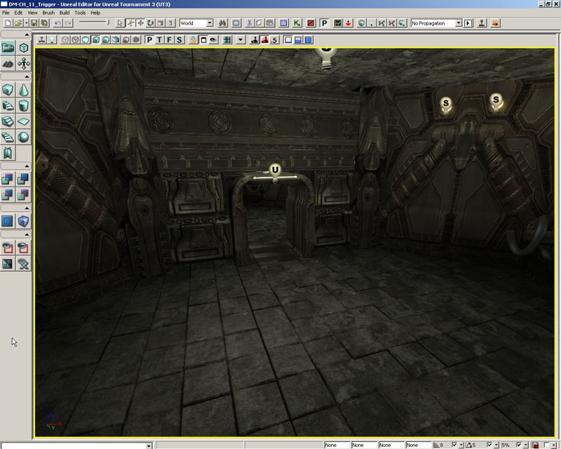
図 11.3 DM-CH_11_Trigger マップ 9. Actor Browser をオープンして、 MU_StateTrigger クラスを選択してください。ビューポート内で右クリックして、新しいアクタのインスタンスを配置するために Add MU_StateTrigger Here を選択してください。

図 11.4 – MU_StateTrigger アクタがマップに追加されます。 10. 1 つの部屋の床の上で右クリックして、マップをテストするために Play From Here を選択してください。 Touch() イベントを初期化するため、トリガアクタの上を走り抜けて、画面上に表示されるメッセージを観察してください。 これは、元々の Touch() イベントからのメッセージのはずです。
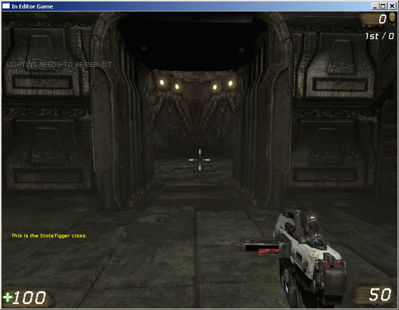
図 11.5 – Touch() イベントメッセージの出力。 ここで、もう一度トリガアクタの上を走り抜けてください。今回は、 Dialog 状態の Touch() イベントからのメッセージが代わりに表示されるはずです。

図 11.6 – 今度は Dialog 状態の Touch() イベントメッセージが出力されます。 これは、アクタが、いまや Dialog 状態であるからで、このバージョンの Touch() イベントが、クラス内の存在する他のいずれのバージョンに対しても優先実行されます。 11. 以後のチュートリアルで使用できるように、新しい名前でこのマップを保存してください。 <<<< チュートリアルの終了 >>>>
11.4 - 状態の継承
継承は、状態に対して期待するように動作します。状態を持つクラスから派生した時は、そのクラス内で、すべての状態、状態関数およびラベルを取得しますので、それらをオーバーライドすることも、基底クラスの実装を保持することもできます。 例を見てみましょう :
class Fish extends Actor;
state Eating
{
function Swim()
{
Log(“Swimming in place while I eat.”);
}
Begin:
Log(“Just a fish in my Eating state.”;
}
class Shark extends Fish;
state Eating
{
function Swim()
{
Log(“Swimming fast to catch up with my food.”);
}
}
class Dolphin extends Fish;
state Eating
{
Begin:
Log(“Just a dolphin in my Eating state.”);
}
上の例では、 Fish(魚), Shark(鮫) および Dolphin(いるか) のクラスを定義しています。 Shark および Dolphin は、 Fish クラスから派生し、基底の実装から異なる部分をそれぞれオーバーライドします ; Shark クラスは、 Eat 関数をオーバーライドし、 Dolphin クラスは、 Begin ラベルをオーバーライドします。
状態の拡張
派生クラス内で、状態をオーバーライドしていなければ、現在のクラスの状態を拡張することも可能です。一連の状態で、すべて共通の機能を持つ時には、とても便利になるかもしれません。例えば、アクタが移動中に動作する共通状態コードを持つと言っても、アクタが歩いている時かアクタが走っている時かに応じた特定の機能がほしくなるかもしれません。例を見てみましょう :
state Moving
{
// すべての移動のタイプに共通なコード。
}
state Running extends Moving
{
// Running 固有のコード。
}
state Walking extends Moving
{
// Walking 固有のコード。
}
チュートリアル 11.2 – 状態トリガ、パート II: 状態の継承
このチュートリアルは、 Dialog 状態への BeginState() および EndState() イベントの追加を見ると共にどのように状態継承が動作するかを示すために基底の Dialog 状態を拡張した Greeting 状態の生成を見ていきます。 1. ConTEXT および MU_StateTrigger.uc スクリプトをオープンしてください。 2. Dialog 状態の本体の中の Touch() イベントの後ろに、 PreviousStateName という名前の 1 つの Name パラメータと共に BeginState() イベントを宣言してください。
event BeginState(Name PreviousStateName)
{
}
3. BeginState() イベントの内部で、画面にメッセージを表示するために、再度 Broadcast() 関数を使用してください。このメッセージは、アクタが現在の状態になる直前の状態を表示します。
WorldInfo.Game.Broadcast(self,"Exiting the"@PreviousStateName@"State");4. 次に、 Name パラメータ NextStateName と共に EndState() イベントを宣言してください。
event EndState(Name NextStateName)
{
}
5. このイベントの中で、 Broadcast() 関数への同様な呼び出しが行われます。
WorldInfo.Game.Broadcast(self,"Entering the"@NextStateName@"State");6. Dialog 状態の下に、 Greeting という名前の新しい状態を宣言し、 Dialog 状態からこの新しい状態を拡張してください。
state Greeting extends Dialog
{
}
この状態は、その本体には何ら関数やイベントを宣言していませんが、既に Dialog 状態内で宣言したものと同様の Touch()、 BeginState() および EndState() イベントを持っています。
7. Touch() イベントは、アクタがこの状態内に在る間に衝突が検知された時、画面に完全に新規のメッセージを出力するため、 Greeting 状態内でオーバーライドされます。
event Touch(Actor Other, PrimitiveComponent OtherComp, vector HitLocation, vector HitNormal)
{
WorldInfo.Game.Broadcast(self,"Hello and welcome to the states example");
}
8. Dialog 状態の Touch() イベントに戻り、イベントが実行された時に Greeting 状態にアクタを置くために GotoState() 関数への呼び出しを追加します。
GotoState('Greeting');
9. スクリプトを保存して、スクリプトをコンパイルして、エラーが発見されたら修正してください。
10. UnrealEd および 以前のチュートリアルで作成した MU_StateTrigger アクタを含むマップをオープンしてください。

図 11.7 – MU_StateTrigger アクタを含むマップ。 11. マップをテストするために、 1 つの部屋の床の上で右クリックして、 Play From Here を選択します。クラスのメインの Touch イベントの元々のメッセージを見るためにトリガアクタ上を走り抜けてください。 注記 : 初期のアクタはいずれの状態にも無いため、 BeginState() イベントの PreviousStateName パラメータによって参照される状態名は None です。

図 11.8 – ここでは、 2 つに分かれたメッセージが表示されます。 12. Dialog 状態の Touch() イベントを実行して、画面上に新しいメッセージを表示するために、もう一度トリガアクタの上を走り抜けてください。Dialog 状態の EndState() イベントと同様に Greeting 状態の BeginState() イベントからのメッセージにも注意すべきです。

図 11.9 – 3 つのすべてのメッセージが今回は表示されています。 13. 最後に、もう一度トリガアクタの上を走り抜けてください。ここでは、 Greeting 状態の Touch() イベントからのメッセージが画面上に表示されるはずです。

図 11.10 – Greeting 状態の Touch() イベントメッセージが表示されます。 <<<< チュートリアルの終了 >>>>
チュートリアル 11.3 – 状態トリガ、パート III: 自動状態
状態の宣言時に Auto キーワードを使用すると、マッチが始まった時にアクタの初期状態をその状態にします。 このチュートリアルでは、 Dialog 状態は MU_StateTrigger のデフォルト状態として設定されます。また、状態継承の概念をより理解するために 更に 2 つの状態が、追加されます。 1. ConTEXT および MU_StateTrigger.uc スクリプトをオープンしてください。 2. ゲームの開始時に、アクタを強制的にこの状態にするために Dialog 状態の宣言に Auto キーワードを追加してください。
auto state Dialog
{
…
// 簡略化するためにコードを削除した
…
}
3. 今度は、 Greeting から拡張した Inquisitor という名前の新しい状態を宣言してください。
state Inquisitor extends Greeting
{
}
4. 次に、宣言したばかりの Inquisitor 状態から拡張した Goodbye という名前のもう 1 つの新しい状態を宣言してください。
state GoodBye extends Inquisitor
{
}
5. ここで、 Inquisitor 状態にアクタを置くために Greeting 状態の Touch() イベント内の GotoState() 関数への呼び出しを追加してください。
GotoState('Inquisitor');
6. Greeting 状態から Touch() イベントをコピーし、以下に示すように Broadcast() 関数内のメッセージと GotoState() 関数内の状態名を変更して、Inquisitor 状態の中に貼り付けてください。
event Touch(Actor Other, PrimitiveComponent OtherComp, vector HitLocation, vector HitNormal)
{
WorldInfo.Game.Broadcast(self,"Are you learning a great deal about UnrealScript?");
GotoState('Goodbye');
}
7. 同様に Touch() イベントを Goodbye 状態に貼り付けて、この状態の関数のバージョン用にメッセージおよび状態名を以下のように変更してください。
event Touch(Actor Other, PrimitiveComponent OtherComp, vector HitLocation, vector HitNormal)
{
WorldInfo.Game.Broadcast(self,"Thanks and have a nice day!");
GotoState('Greeting');
}
8. スクリプトを保存して、スクリプトをコンパイルしてください。何らかのエラーが報告されたら修正してください。
9. UnrealEd および直前のチュートリアルで使用した MU_StateTrigger アクタを含むマップをオープンしてください。 1 つの部屋の床で右クリックして、マップをテストするために Play From Here を選択してください。
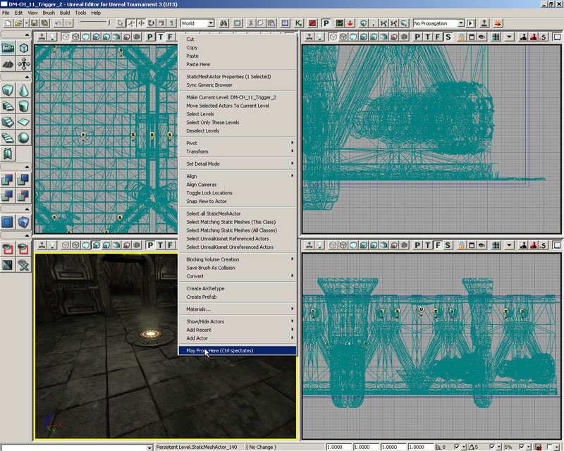
図 11.11 – Play From Here 機能を利用してマップをテストしてください。 10. トリガアクタの上を走り抜けてください。メッセージが出力されるはずですが、今度は、状態の宣言時に Auto キーワードを使用しており、アクタは、デフォルトで Dialog 状態となるため、クラスのメインの Touch() イベントの代りに Dialog 状態の Touch() イベントからのメッセージとなるはずです。もちろん、 BeginState() および EndState() メッセージも Greeting 状態および Dialog 状態に応じて表示されます。

図 11.12 – Dialog 状態の Touch() イベントメッセージが最初に表示されます。 11. 残りのメッセージを見るためにトリガの上を走り抜けることを続けてください。アクタは、 Greeting、 Inquisitor および Goodbye 状態の間で、それぞれの状態のメッセージを表示しながら、連続的にループするはずです。 <<<< チュートリアルの終了 >>>>
11.5 - 状態コード
状態は、基本的に 2 つの部分から成り立っています : 関数と状態コードです。状態コードは、ある種の遷移、通常は 1 つの状態から他の状態への遷移、を行った時に得られるコードですが、場合によっては、同じ状態内でも得られます。このコードは、任意の関数内に在るわけではなく、単に状態そのものの中にあり、ある種のラベルに続いています。ラベル
ラベルは、対応するコードの実行開始点の状態コード内の特定の位置を指定するために使用されます。ラベルは任意の有効な名前を持つことができます。ラベルは、もっぱら文字列で構成される、任意の有効な名前を持つことができますが、状態コードを使用する時は、 "Begin" ラベルという 1 つのラベルは特別です。この特定のラベルは、状態コードの実行の開始に使用される既定ラベルです。以下の例を見てください。
auto state MyState
{
function MyFunc()
{
// 何かを実行 ...
}
Begin:
Log(“MyState’s Begin label is being executed.”);
Sleep(5.0);
goto(‘MyLabel’);
MyLabel:
Log(“MyState’s MyLabel label is being executed.”);
Sleep(5.0);
goto(‘Begin’);
}
LATENT(潜在) 関数
上の例では、オブジェクトが MyState に入ったと同時に、メッセージをログ出力し、 5 秒間スリープして、 MyLabel ラベルに行き、メッセージをログ出力し、 5 秒間スリープしてから処理をもう一度開始する Begin ラベル内のコードの実行を開始します。これは、オブジェクトが MyState 状態にある間、続きます。 状態がスリープしている間、何が起こっているのだろうといぶかしく思うかもしれません。これは良い質問です。なぜなら、通常は実行中のコードは、ブロッキングしているため、他の任意のコードが実行可能になる前までに、その実行を全て完了しなければならないからです。さて、 UnrealScript には、潜在関数と呼ばれる特別な関数があります。端的に言えば、これらの関数は他のコード (すなわち、他の状態のコードおよびゲームの残りの部分) の実行を許可しますが、現在の実行パスの次のコードの実行を止めます。 潜在関数の作業を行う時、覚えておく必要のあることは、本当にほんのわずかだけです : 1. 関数は、ある時間量が経過したらリターンしますので、状態コードの実行は継続されます 2. 潜在関数は、状態コードの中でのみ使用することができます 3. 関数の本体内から潜在関数の呼び出しはできませんACTOR LATENT(アクタ) 潜在関数
Actor クラスは、 Actor クラスから拡張した任意のクラスの状態コード内で使用可能な 2 つのとても一般的な潜在関数を持っていますSleep
この関数は指定された量の時間、状態コードの実行を停止するものです。指定した時間が経過したら、状態コードは、 Sleep() 関数呼び出しの直後から直接実行を再開します。Sleep( float Seconds )Seconds は、状態コードが停止すべき秒数です。
FinishAnim
この関数は、関数に渡された AnimNodeSequence の現在のアニメーションが終了するまで、状態コードの実行を停止します。FinishAnim( AnimNodeSequence SeqNode )SeqNode パラメータは、アニメーションを再生しているアクタと関係する AnimuTree 内のアニメーションノードです。
CONTROLLER LATENT(コントローラ潜在) 関数
Controller クラスは、主にパス検索およびナビゲーションに関する幾つかの潜在関数を持ちます。MoveTo
本関数は、 Controller によって制御されている Pawn をワールド内の特定の場所に移動させます。MoveTo(vector NewDestination, optional Actor ViewFocus, optional bool bShouldWalk = (Pawn != None) ? Pawn.bIsWalking : false)NewDestination は、 Pawn が移動すべきワールド内の位置です。 ViewFocus は、 Pawn が対面すべき Actor です。その回転は、 Pawn が常に ViewFocusと向き合っていることを確実にするために、更新されます。 bShouldWalk パラメータは、新しい位置に向かって Pawn が歩くか走るかを指定します。
MoveToward
この関数は、位置の代りに特定の Actor に向かって移動するため、 Controller によって Pawn が制御される以外は MoveTo 関数と似ています。MoveToward(Actor NewTarget, optional Actor ViewFocus, optional float DestinationOffset, optional bool bUseStrafing, optional bool bShouldWalk = (Pawn != None) ? Pawn.bIsWalking : false)NewTarget は Pawn が移動の対象とすべき Actor です。 ViewFocus は Pawn が対面すべき Actor です。その回転は Pawn が常に ViewFocusと向き合っていることを確実にするために、更新されます。 DestinationOffset は、NewTarget の位置に対する相対オフセットを許可して、 Pawn を正確な位置ではないが NewTarget の近くに移動させます。 bUseStrafing パラメータは、 Pawn が新たな目的地に移動する間に機銃掃射できるようにするかを指定します。 bShouldWalk パラメータは、新しい位置に向かって Pawn が歩くか走るかを指定します。
FinishRotation
この関数は、Controller によって制御された Pawn の回転が Pawn の DesiredRotation プロパティで指定された回転と一致するまで、状態コードの実行を停止します。FinishRotation()
WaitForLanding
この関数は、 PHYS_Falling 物理タイプの時に Controller によって制御された Pawn が着陸するまで状態コードの実行を停止します。WaitForLanding(optional float waitDuration)waitDuration パラメータは、 Pawn が着陸するまで待機する最大の秒数です。この時間が経過するまでに Pawn が着陸しなかった場合は、 LongFall () イベントが実行されます。
UTBOT 潜在関数
UTBot クラスは、新規の AI 動作の作成に便利な 2 つの潜在関数を持っています。WaitToSeeEnemy
この関数は、制御中の Pawn から敵が見える設定の時だけ、 Pawn が、敵を直接見るまで、状態コードの実行を停止します。WaitToSeeEnemy()
LatentWhatToDoNext
この関数は、 AI エンティティの意思決定機能を含む WhatToDoNext() 関数を呼び出すために使用されます。潜在バージョンを使用すると、適切な時間が経過した時、たとえば次のティック時、に呼び出しが行われます。これにより、起こる可能性のある競合条件の発生を防ぎ、 AI エンティティの動作実行の時間を与えます。LatentWhatToDoNext()
11.6 - 状態スタック動作
1 つの状態から、もう 1 つの状態に遷移するために GotoState 関数を使用可能なことは、既に説明してきました。これが発生した時には、状態は変更されて、以前の状態に戻るための道はありませんし、多くの場合には、それが望まれる動作です。たとえば、 EngagingEnemy(敵との交戦) から RunningLikeACoward(臆病者のように走る) 状態に変わった時は、以前の状態に戻りたいとは思わないでしょう。現在の状態を止めることを望まないで、他の状態に行き、それから戻って来たい場合には、 PushState および PopState 関数があります。PUSHSTATE & POPSTATE
PushState 関数は、 GotoState 関数とほとんど同じです。呼び出すときに遷移したい状態と、オプションで実行を開始したいラベルを渡します。本関数は、他の状態をプッシュしてスタックの先頭に新しい状態を置くので、このような名前となっています。 PopState 関数は、パラメータが無く、以前実行していた状態に戻します。 簡単な例を見てみましょう :
state Looking
{
function Look()
{
PushState(‘Peeking’);
// 何か他の興味深いことを実行 ...
}
Begin:
PushState(‘Peeking’, ‘Begin’);
// もっと他の興味深いことを実行 ...
}
state Peeking
{
Begin:
Log(“Nothing to see here.”);
PopState();
}
PushState を使用する時に、気をつけなければならない、幾つかの興味深い実装に関する詳細事項があります :
- 状態コード内から PushState が呼び出された時は、その呼び出しは、潜在関数として、取り扱われます。そのため、上の例では、 Begin ラベル内で PushState が呼び出された時は、その呼び出しの後のコードは、状態がポップバックしてくるまで実行されません。
- 関数内から PushState が呼び出された時は、その呼び出しは、潜在関数として取り扱われません。そのため、上の例では、 Look 関数から PushState が呼び出された時に、 PushState は、状態コード内からのみ潜在関数として取り扱われるので、その呼び出し以降のコードは即座に実行されるでしょう。
- 同じ状態をスタック上に何度もプッシュできません ; この処理は失敗します。
STATE STACKING (状態スタック)イベント
これらのイベントは、以前説明した BeginState() および EndState() イベントに似ていますが、状態間の遷移を行うために、 PushState() および PopState() を使用した時は、それらのイベントの機能を置き換えます。これらのイベントは、 BeginState() および EndState() イベントと異なり、パラメータを持ちません。PUSHEDSTATE
本イベントは、 PushState() 関数を利用して新規状態に遷移した時、プッシュした状態内で直ちに実行されます。POPPEDSTATE
本イベントは、 PopState() 関数を利用して以前の状態に遷移を戻した時に、ポップした状態内で直ちに実行されます。PAUSEDSTATE
このイベントは、 PushState() 関数を利用して、新しい状態に遷移した時にポーズされた状態内で実行されます。CONTINUEDSTATE
このイベントは、 PopState() 関数を利用して、以前の状態に遷移が戻った時に、継続された状態内で実行されます。11.7 - 状態に関連した関数
既に本章で詳しく述べた関数に加えて、その他に、状態に関連した若干の関数があり、状態を利用して新規のアクタを生成する時には非常に便利です。ISINSTATE
この関数は、アクタの現在アクティブな状態か、または、与えられた状態がスタック上にあるかを、判別するために使用できます。IsInState( name TestState, optional bool bTestStateStack )TestState は、確認したい状態の名前です。アクタが現在この状態であれば、関数は True 値をリターンします。 bTestStateStack パラメータは、状態スタック内で与えられた状態をチェックするかどうかを指定します。もし True であり、スタック内に状態が置かれていれば、関数は True 値をリターンします。 例を挙げます :
state Looking
{
// 何らかの有用なコード ...
}
state Staring extends Looking
{
// 何らかの有用なコード ...
}
function StartLooking()
{
if (!IsInState(‘Looking’))
{
PushState(‘Looking’);
}
}
IsInState() 関数は TestState から拡張された任意に状態に対して True をリターンするので、アクタが、 Looking 状態または Staring 状態のいずれかであれば、例の中の IsInState() 関数コールは True をリターンするでしょう。 この機能はスタック内にある継承された状態に対しては動作しません。
スタックを参照するメソッドを使用した同一の例です :
state Looking
{
// 何らかの有用なコード ...
}
state Staring extends Looking
{
// 何らかの有用なコード ...
}
function StartLooking()
{
if (!IsInState(‘Looking’, True))
{
PushState(‘Looking’);
}
}
この例では、 IsInState() 関数は、 Looking 状態自身が、状態スタック内に出現した時にのみ True をリターンします。もし、 Staring 状態のみが現れた場合は、 False 値がリターンされます。
GETSTATENAME
この関数は、アクタの現在アクティブな状態の名称をリターンします。この関数にはパラメータはありません。この関数は、 IsInState と同じような状況でしばしば使用されますが、この関数では、継承された状態は、まったく動作しません。アクタが現在いる実際の状態の名前のみがリターンされます。 例を挙げます :
state Looking
{
// 何らかの有用なコード ...
}
state Staring extends Looking
{
// 何らかの有用なコード ...
}
function StartLooking()
{
if (GetStateName() == ‘Looking’)
{
PushState(‘Staring);
}
}
PushState() 関数呼び出しは、アクタが Looking 状態にある時のみに実行されます。
ISCHILDSTATE
この関数は、1 つの状態が他の状態から拡張されたかどうかを判別するために使用されます。もし、そうであれば、 True を、そうでなければ False をリターンします。IsChildState(Name TestState, Name TestParentState)TestState は、確認する子の状態の名前です。 TestParentState は、それに対して確認する親の状態の名前です。
DUMPSTATESTACK
本関数は、デバッグ用途で、現在の状態スタックをログに出力します。状態および状態スタック動作を頻繁に使用する新規のクラスを生成する時には、好ましくないまたは望まない動作が引き起こされる可能性は非常に高くなります。この関数は、これらの問題やバグを簡単にまとめます。チュートリアル 11.4 – 状態トリガ、パート IV: 状態スタック動作
PushState() および PopState() 関数を使用して、状態をスタックする機能は、 Unreal Engine 3 および UT3 では、新規機能です。このチュートリアルでは、状態トリガアクタは、このメソッドと GotoState() 関数呼び出しの差異を示して、 Greeting および Inquisitor 状態間をナビゲートするために、それらの関数を使用します 1. ConTEXT および M_StateTrigger.uc スクリプトをオープンしてください。 2. Greeting 状態で、 GotoState() 関数呼出しをコメントアウトして、同様に Inquisitor 状態を渡す PushState() 関数呼出しと置き換えてください。
//GotoState('Inquisitor');
PushState('Inquisitor');
3. それから、 Inquisitor 状態の中で GotoState() 関数呼出しをコメントアウトして、単なる PopState() 関数呼出しと置き換えてください。
//GotoState(‘Goodbye’); PopState();4. スクリプトを保存して、スクリプトをコンパイルしてください。エラーがあったら修正してください。 5. UnrealEd および、以前のチュートリアルで使用した MU_StateTrigger アクタを含むマップをオープンしてください。
a. マップをテストするために、部屋の 1 つの床の上で右クリックして、 Play From Here を選択してください。
b. Dialog 状態のメッセージを表示するためにトリガアクタの上を走り抜けて、アクタを Greeting 状態に送ってください。

図 11.13 – Dialog 状態の Touch() および EndState() イベントメッセージおよび Greeting 状態の BeginState() イベントメッセージが表示されます。
c. 戻ってアクタの上を走り抜け、 Touch() イベントからのメッセージのみが表示されることに注意してください。 Inquisitor および Greeting 状態に対応した BeginState() および EndState() イベントは、無視されます。 GotoState() 関数だけが、これらのイベントを実行させます。
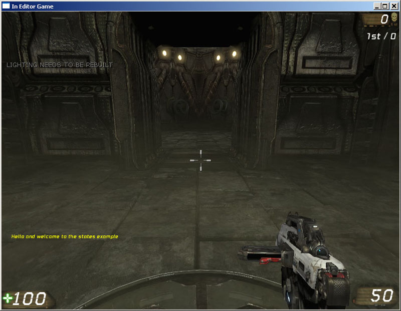
図 11.14 – Greeting 状態の Touch() イベントからのメッセージのみが表示されます。
d. Inquisitor 状態の Touch() イベントメッセージが表示するために、再度、アクタの上を走り抜けてください。
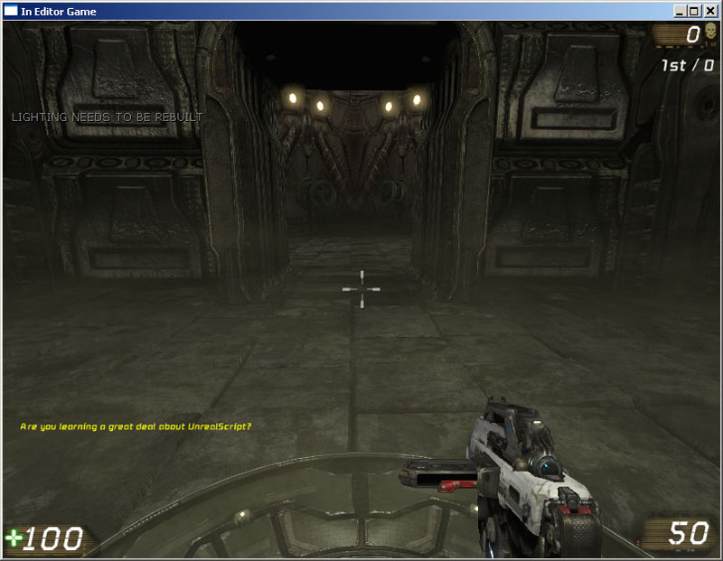
図 11.15 – ここで、 Inquisitor 状態からの Touch() イベントメッセージが表示される。
e. 最後に、アクタの上をもう一度走り抜けてください。 Inquisitor 状態の Touch() イベント内の PopState() 関数呼出しが、アクタを、もう一度グリーティングメッセージを表示させる Greeting 状態に置くことに注意してください。

図 11.16 – Greeting 状態からのメッセージがもう一度表示されます。 6. クラスがスタック動作を利用しているため、明らかに BeginState() および EndState() イベントは動作しません。以前と同様のやり方で、どの状態が、プッシュされたかポップされたかを指定するイベントを得るために、状態スタック動作が替わりに使用されます。 Dialog 状態の PushedState() イベントを宣言することから始めてください。
event PushedState()
{
}
本関数内では、 BeginState() イベント内でメッセージを出力するために使用されたコード行と同じものを配置してください、ただし、 PreviousStateParameter の替わりに状態の適切な名前を取得するため GetStateName() 関数を使用してください。また、 "Exiting" も "Pushing" と読み替えてください。
WorldInfo.Game.Broadcast(self,"Pushing the"@GetStateName()@"State");すべてのイベント宣言を 3 回コピーおよび貼り付けして、新たな宣言の名前を PoppedState、 PausedState および ContinuedState に変更してください。それから、 "Pushing" という単語が、それぞれ、 "Popping"、"Pausing" および "Continuing" となるように変更してください。
event PoppedState()
{
WorldInfo.Game.Broadcast(self,"Popping the"@GetStateName()@"State");
}
event PausedState()
{
WorldInfo.Game.Broadcast(self,"Pausing the"@GetStateName()@"State");
}
event ContinuedState()
{
WorldInfo.Game.Broadcast(self,"Continuing the"@GetStateName()@"State");
}
7. スクリプトを保存して、再度スクリプトをコンパイルして、エラーが検出されたら修正してください。
8. UnrealEd および以前に状態トリガアクタを含み保存したマップをオープンしてください。
a. 部屋の 1 つの床の上で右クリックして、地図をテストするために Play From Here を選択してください。
b. Dialog 状態のメッセージを表示して、アクタを Greeting 状態に送るために、トリガアクタ上を走り抜けてください。
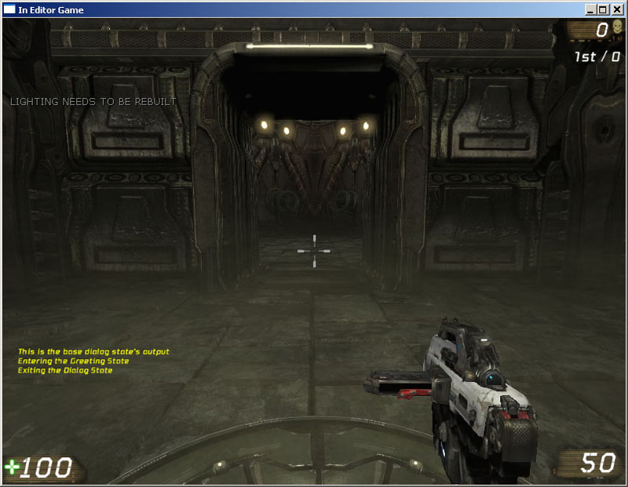
図 11.17 – Dialog 状態の Touch() および EndState() イベントメッセージおよび Greeting 状態の BeginState() イベントメッセージが表示されます。
c. アクタ上に戻って走り抜けて、今度は、 PushState() 関数を使用するため、 PausedState() および PushedState() イベントからのメッセージ表示に注意してください。

図 11.18 – Touch() メッセージに加えて、 PausedState() および PushedState() メッセージが表示されます。
d. Inquisitor 状態をポップするために、再度アクタ上を走り抜けてください。 PopState() 関数呼出しによって、ここでは、 PoppedState() および ContinuedState() イベントが表示されるべきです。

図 11.19 – PoppedState() および ContinuedState() メッセージは、 Touch() メッセージと共に表示されます。 この短い一連のチュートリアルでは、単に、どのような状態があり、どのように動作するかの基本的な理解を、状態間の遷移の様々な方法を含み、提供したつもりです。今後のチュートリアルでは、ゲームで使用される興味深い新たなアイテムを作成するために、 UT3 内で、どのように状態が使用されるかをより良く体感できる、比較的複雑な例で、状態は使用されます。 <<<< チュートリアルの終了 >>>>
チュートリアル 11.5 – 砲台、パート I: MU_AUTOTURRET クラスおよび構造体宣言
状態の利用に対する基本事項は終えたので、ここで、任意の視認可能な敵を自動認識する新しく配置可能な監視砲台の作成に着手しましょう。このクラスは、アクタの視覚的局面を提供し、その環境内の要素に基づき動作を変えるために状態を使用する Pawn クラスの拡張です。砲台の状態に取り掛かる前に、実行すべきかなりの初期セットアップがありますので、最初に終わらせてしまいましょう。 1. ConTEXT をオープンして、 UnrealScript ハイライタを使用する新規ファイルを作成してください。 2. 始めに、 MU_AutoTurret と呼ばれる新規ポーンクラスを宣言して、基底の Pawn クラスから拡張してください。また、 UnrealEd の中の Properties ウィンドウで表示されないように、 AI、 Camera、 Debug、 Pawn および Physics カテゴリを隠して、クラスを配置可能にしてください。class MU_AutoTurret extends Pawn HideCategories(AI,Camera,Debug,Pawn,Physics) placeable;3. 本クラスは、変数の宣言に移る前に定義する必要が有る構造体をいくつか使用します。まず、Pitch、 Yaw および Roll のそれぞれの軸の周りでの最小および最大の回転を示す 2 つの Rotators で構成される新しい RotationRange 構造体が作成されます。また、回転の個々の軸に対して限界を適用するかどうかを指定する 3 つの Bool 変数が宣言されます。
//Min および Max Rotators Struct - 砲台の回転を制限する
struct RotationRange
{
var() Rotator RotLimitMin;
var() Rotator RotLimitMax;
var() Bool bLimitPitch;
var() Bool bLimitYaw;
var() Bool bLimitRoll;
structdefaultproperties
{
RotLimitMin=(Pitch=-65536,Yaw=-65536,Roll=-65536)
RotLimitMax=(Pitch=65536,Yaw=65536,Roll=65536)
}
};
注記 : 個々の Rotator に対するデフォルト値が、 structdefaultproperties ブロックを使用して定義されました。

図 11.20 – 右側では、回転は制限されていません、左側では制限されています。 4. いくつかの SoundCues への参照を含む TurretSoundGroup という名前の構造体が以下のように定義されています。これらの SoundCue 参照は、特定の環境下で演奏されるサウンドを決めるために使用されます。
// 砲台の動作に関するサウンド
struct TurretSoundGroup
{
var() SoundCue FireSound;
var() SoundCue DamageSound;
var() SoundCue SpinUpSound;
var() SoundCue WakeSound;
var() SoundCue SleepSound;
var() SoundCue DeathSound;
};
5. 砲台では、砲口の閃光、ダメージ効果および破壊効果のような特殊効果がいくつか必要ですが、それらの効果に対して使用する ParticleSystem への参照が必要です。 TurretEmitterGroup という名前の構造体では、これらの参照を保持します。本構造体内には、砲口の閃光の効果の表示時間量を決める Float 、パーティクルの spawn(スポーン) レートの制御を許可する破壊効果のパーティ来るシステム内のパラメータの Name および、砲台の破壊後もダメージ効果を継続するかを指定するための Bool など、他にもいくつかのプロパティが存在しています。
// 砲台に対する PSystems
struct TurretEmitterGroup
{
var() ParticleSystem DamageEmitter;
var() ParticleSystem MuzzleFlashEmitter;
var() ParticleSystem DestroyEmitter;
var() Float MuzzleFlashDuration;
var() Name DamageEmitterParamName;
var() Bool bStopDamageEmitterOnDeath;
structdefaultproperties
{
MuzzleFlashDuration=0.33
}
};
MuzzleFlashDuration プロパティに対して、 0.33 をデフォルト値に設定していることに留意してください。多くの場合、この値は、砲口の閃光の適切な初期値になるはずです。
6. TurretBoneGroup という名前のもう 1 つの構造体は、 3 つのソケット名および骨格コントローラの名前への参照を提供しています。ソケット名は、任意のパーティクル効果に対してロケーター、および砲台が発射した発射物の spawning(スポーニング) として使用されるソケットを参照しています。砲台の回転を制御するため、砲台に割り当てられた AnimTree 内の SkelControlSingleBone を操作するために骨格コントローラの名前が使用されます。
//Bone、 Socket、 Controller の名前
struct TurretBoneGroup
{
var() Name DestroySocket;
var() Name DamageSocket;
var() Name FireSocket;
var() Name PivotControllerName;
};
7. TurretRotationGroup という名前の最後の構造体は、アイドル、警戒または破壊時に砲台が取るべきポーズを指定する 3 つの Rotators を含みます。砲台の回転は、状況に応じて、現在の方向から、これら 3 つの回転の 1 つに補間されます。本構造体は、砲台が破壊された時に予め定義されたポーズ、またはランダムに計算されたポーズのいずれを使用するかを指定する Bool 値も含みます。
// 砲台のポーズを定義する Rotator
struct TurretRotationGroup
{
var() Rotator IdleRotation;
var() Rotator AlertRotation;
var() Rotator DeathRotation;
var() Bool bRandomDeath;
};

図 11.21 – 砲台のメッシュに対するポーズを作成するために使用される Rotations 。 8. スクリプトを、 MasteringUnrealScript/Classes ディレクトリに、クラス名と合致するように MU_AutoTurret.uc という名前で保存してください。 <<<< チュートリアルの終了 >>>>
チュートリアル 11.6 – 砲台、パート II: クラス変数宣言
MU_AutoTurret クラスで必要な構造体を宣言したので、クラス変数の宣言ができるようになりました。これらの変数は、 2 つのグループに分かれています。最初のグループは、クラス内のコードによってのみ使用され、 UnrealEd 内のデザイナーからは利用できない変数から成ります。 2 番目のグループは、 UnrealEd の中で砲台のみかけおよび動作をカスタマイズするためにデザイナーが使用できるプロパティとなります。このチュートリアルでは、編集できない変数である、第 1 のグループの宣言を説明しています。 1. ConTEXT および MU_AutoTurret.uc スクリプトをオープンしてください。 2. 砲台は、追跡して発砲するために、何を射撃するかを知る必要があります。このターゲットは、砲台のターゲットとして 2 つの別々の参照を持つ Pawn です。 1 つめの参照は、最後のティックの間に砲台が追跡していた現在のターゲットとなり、もう 1 つは、現在のティックの間に砲台が追跡すべき新規ターゲットへの参照です。この 2 つの参照は、ティック毎のターゲット変更を示すことを可能にするために、必要となります。var Pawn EnemyTarget; // 現在のティックで砲台がターゲットとすべき新たな敵 var Pawn LastEnemyTarget; // 直前のティックで砲台がターゲットとしていた敵3. 砲台は、プレーヤーが動いたことを知るために、砲台からターゲットへの方向も追跡し続けなくてはなりません。ターゲットについては、現在のティックの間の方向ベクタと同様に直前のティックの方向ベクタを保持するため、 2 つの参照が保持されています。
var Vector EnemyDir; // 現在のティックの砲台の基部から敵の位置へのベクタ var Vector LastEnemyDir; // 直前のティックの砲台の基部から敵の位置へのベクタ

図 11.22 – ターゲットが動くにつれて、 EnemyDir および LastEnemyDir は更新されます。 4. ターゲットの方向を向くように現在の方向から砲台の回転を補間するために、幾つかの情報が必要となります。それらは、以下に挙げるものです。
- 砲台のピボットボーンの開始回転
- 砲台のピボットボーンの要求回転
- 回転を実行するために必要な全時間 (後に宣言される予定の回転率に基づく)
- 補間が始まってからの経過時間量
- 補間のアルファ値 (0.0 から 1.0)
var float TotalInterpTime; // 回転を補間するための合計時間 var Float ElapsedTime; // 現在の補間で消費された時間 var Float RotationAlpha; // 新規の回転へ補間する時の現在のアルファ var Rotator StartRotation; // 補間のために開始する回転 var Rotator TargetRotation; // 補間のために要求する回転5. 砲台から発射された発射物を、正しい位置および方向に spawn(スポーン) するために、砲台の砲身の先端の位置のソケットのワールドスペースにおける位置および回転を保持する 2 つの変数が使用されます。
var Vector FireLocation; // 発射点のソケットのワールド内の位置 var Rotator FireRotation; // 発射点のソケットのワールド内の回転

図 11.23 – FireLocation および FireRotation の例 6. 砲台の回転はピボットボーンを基にしていますが、このボーンの回転を直接制御しません。その代わりに、 SkelControlSingleBone は、砲台に割り当てられた AnimTree 内のピボットボーンにリンクされ、骨格コントローラは、砲台の回転を制御するために操作されます。もちろん、これは、骨格コントローラへの参照が必要であることを意味します。
var SkelControlSingleBone PivotController; // AnimTree 内の skelcontrol7. 2 つの Bool 変数は、砲台の現在のステータスを保持します。 1 つめは、 bCanFire という名前で、砲台がターゲットに対して発射物を発射可能な状態にあるかどうかを決定します。もう 1 つは、 bDestroyed という名前で、砲台が破壊されて、もはや敵に照準を合わせられないかどうかを決定します。
var Bool bCanFire; // 砲台は、発射状態にあるか ? var Bool bDestroyed; // 砲台は、破壊されているか ?8. 次のチュートリアルで見るように、砲台のライフ値は、 UnrealEd 内でデザイナーによって設定可能です。別の変数に、砲台が持てる最大のライフ値を参照するために、プロパティの初期値を保持しています。
var Int MaxTurretHealth; // 本砲台に対する最大ライフ値9. FullRevTime という名前の float 変数は、次のチュートリアルで説明されるプロパティによって指定された最小回転率 MinTurretRotRate で砲台が全回転した時に要する秒数を保持します。
var Float FullRevTime; // 最小回転率で全回転するための秒数10. GElapsedTime という名前の Float 変数は、クラスグローバル Tick() 関数 で実行された最後の敵の位置の更新から経過した時間量を保持しています。語頭の G は、単に、任意の状態の Tick() 関数ではなく、グローバル Tick() 関数が使用されることを示します。
var Float GElapsedTime; // 最後のグローバルティックからの経過時間11. OrigMinRotRate という名前の Int 変数は、以降のチュートリアルで宣言される 1 つの編集可能な変数 MinTurretRotRate のマッチが始まった時の初期値に対する参照を保持します。
var Int OrigMinRotRate; // MinTurretRotRate の開始時の値12. このグループの最後のいくつかの変数は、ダメージ、砲口の閃光および破壊効果を表示する ParticleSystemComponents への参照です。
var ParticleSystemComponent DamageEffect; // ダメージ効果のための PSys コンポーネント var ParticleSystemComponent MuzzleFlashEffect; // 砲口の閃光のための PSys コンポーネント var ParticleSystemComponent DestroyEffect; // 破壊効果のための PSys コンポーネント

図 11.24 – 砲口の閃光、ダメージおよび破壊の効果の例。 13. 作業結果を保存するためにスクリプトを保存してください。 <<<< チュートリアルの終了 >>>>
チュートリアル 11.7 – 砲台、パート III: 編集可能な変数宣言
変数の 2 番目のグループは、 Unreal Editor の内部でデザイナーによって設定可能なプロパティから成る MU_AutoTurret クラスに属しています。このセクションは、以前に宣言された構造体を使用するための変数を含んでいて、全くコードを変更する必要無く、砲台の見かけや動作のカスタマイズをデザイナーに許可して、砲台クラスを柔軟にすることが可能です。本チュートリアルで宣言されたすべての変数は、編集可能として宣言され、 Turret カテゴリ中に配置されます。 1. ConTEXT および MU_AutoTurret.uc スクリプトをオープンしてください。 2. 砲台が、表示コンポーネントとして骨格メッシュを利用するという結果に導くかもしれない直前のチュートリアル内のソケットおよび骨格コントローラに対する参照にお気づきかもしれません。 Pawn は既に SkeletalMeshComponent 参照を持っていますが、 turret クラスは、 Turret カテゴリ内で表示される自分自身のものを宣言しています。表示の用途での SkeletalMeshComponent に加えて、 DynamicLightEnvironmentComponent は、メッシュをもっと効果的にライティングするために使用されます。 2 番目の骨格メッシュは、砲台が破壊された時にデフォルトのメッシュ内で入れ替えができるようにも指定されます。var(Turret) SkeletalMeshComponent TurretMesh; // 砲台に対する SkelMeshComp var(Turret) DynamicLightEnvironmentComponent LightEnvironment; // 効果的なライティング用途 var(Turret) SkeletalMesh DestroyedMesh; // 破壊された SkelMesh3. 以前定義された TurretBoneGroup 構造体の 1 つのインスタンスは、砲台の回転を制御し効果を付加するために必要なソケットおよび骨格コントローラの名前を提供するために必要です。
var(Turret) TurretBoneGroup TurretBones; // Socket, Controller の名前4. 砲台に対してポーズを設定するために TurretRotationGroup 構造体のインスタンスに加えて、 RotationRange のインスタンスが、それぞれの軸の周りの回転に制限を設定するために使用されるように、 2 つの Int 変数が、砲台が実行できる最小および最大回転率を設定するために必要となります。
var(Turret) TurretRotationGroup TurretRotations; // 砲台のポーズを定義する回転 var(Turret) RotationRange RotLimit; // 砲台に対する回転制限 var(Turret) Int MinTurretRotRate; //Min Rotation の速度 Rot/Second var(Turret) Int MaxTurretRotRate; //Max Rotation の速度 Rot/Second5. 砲台は、発射物を発射しますが、発射する発射物のクラスを知ることが必要です。また、発射物を発射する速度は、毎秒の一斉射撃数として指定されます。実際の砲台のよりリアルな表現を与えるために、砲台の照準にいくらかのバリエーションが導入されています。
var(Turret) class<Projectile> ProjClass; // 砲台が発射する発射物の型 var(Turret) Int RoundsPerSec; // 秒毎の一斉射撃の数 var(Turret) Int AimRotError; // 砲台の照準付けの誤りの最大単位

図 11.25 – RoundsPerSecond 値が異なる同じ砲台。 6. TurretEmitterGroup 構造体のインスタンスは、ダメージ、破壊および砲口の閃光の効果に対して使用するパーティクルシステムへの参照を提供します。
var(Turret) TurretEmitterGroup TurretEmitters; // 砲台によって使用される PSystems7. 砲台に対するサウンドは、 TurretSoundGroup 構造体のインスタンス内で参照されます。
var(Turret) TurretSoundGroup TurretSounds; // 砲台の動作で使用されるサウンド8. Pawns が Health プロパティを持つのに対して、砲台は、 Turret グループ内に含まれるすべてのプロパティを保持するために自分自身の TurretHealth プロパティを使用します。
var(Turret) Int TurretHealth; // 砲台のライフ値の初期値9. 作業結果を失わないようにスクリプトを保存してください。 <<<< チュートリアルの終了 >>>>
チュートリアル 11.8 – 砲台、パート IV: デフォルトプロパティ
MU_AutoTurret クラスの設定の最後の部分では、砲台によって利用されるコンポーネントに対して、サブオブジェクトを生成する必要があります。デフォルトプロパティブロック内でも、構造体インスタンスのプロパティおよび以前のチュートリアルで宣言した他の個々の数多くのプロパティのデフォルト値を設定しなければなりません。 1. ConTEXT および MU_AutoTurret.uc スクリプトをオープンしてください。 2. defaultproperties ブロックを作成してください
defaultproperties
{
}
3. DynamicLightEnvironmentComponent は、設定する必要のあるプロパティがありませんので、かなり簡単に作成されます。すべてのデフォルト値を満足しています。 それは、 LightEnvironment 変数に代入されて、 Components 配列に追加されます。
Begin Object Class=DynamicLightEnvironmentComponent Name=MyLightEnvironment End Object LightEnvironment=MyLightEnvironment Components.Add(MyLightEnvironment)4. SkeletalMeshComponent は、生成され、 Components 配列に追加され、 Pawn クラスから継承された Mesh 変数と同じく、このクラスの TurretMesh 変数に代入される必要があります。加えて、コンポーネントの SkeletalMesh、 AnimTreeTemplate、 PhysicsAsset および LightEnvironment プロパティが設定されます。
Begin Object class=SkeletalMeshComponent name=SkelMeshComp0 SkeletalMesh=SkeletalMesh'TurretContent.TurretMesh' AnimTreeTemplate=AnimTree'TurretContent.TurretAnimTree' PhysicsAsset=PhysicsAsset'TurretContent.TurretMesh_Physics' LightEnvironment=MyLightEnvironment End Object Components.Add(SkelMeshComp0) TurretMesh=SkelMeshComp0 Mesh=SkelMeshComp0SkeletalMesh, AnimTreeTemplate および PhysicsAsset に代入されたアセットは、 TurretContent パッケージ内に在り、 本章に対するファイルは、 DVD により提供されています。これらは単なるデフォルト値ですので、砲台をカスタマイズするため、 Unreal Editor の内部で砲台アクタを配置する時に自分自身のアセットで置き換えることができます。
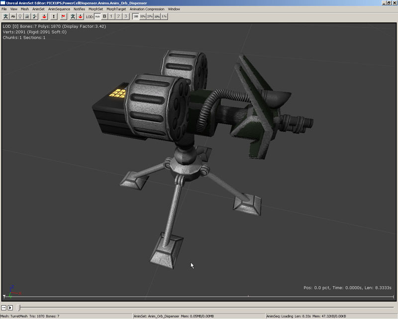
図 11.26 – TurretContent パッケージからの TurretMesh 骨格メッシュ。 5. MuzzleFlashEffect、 DestroyEffect および DamageEffect に対する ParticleSystemComponent サブオブジェクトは、すべて非常によく似ていて、すべてを同時に実行することができます。 DamageEffect のコンポーネントにおけるただ一つの例外は、 SecondsBeforeInactive プロパティは、いつでも ParticleSystem がプレイを続行していることを確実にするために、他の 2 つのコンポーネントのような 1.0 という値ではなく、 10000.0 というかなり高い値に設定されるという点です。
Begin Object Class=ParticleSystemComponent Name=ParticleSystemComponent0 SecondsBeforeInactive=1 End Object MuzzleFlashEffect=ParticleSystemComponent0 Components.Add(ParticleSystemComponent0) Begin Object Class=ParticleSystemComponent Name=ParticleSystemComponent1 SecondsBeforeInactive=1 End Object DestroyedEffect=ParticleSystemComponent1 Components.Add(ParticleSystemComponent1) Begin Object Class=ParticleSystemComponent Name=ParticleSystemComponent2 SecondsBeforeInactive=10000.0 End Object DamageEffect=ParticleSystemComponent2 Components.Add(ParticleSystemComponent2)6. TurretBones 構造体内に置かれたプロパティの値は、デフォルトの SkeletalMesh および AnimTree を基にして設定されます。これらは、異なるメッシュまたは AnimTree を使用している時に、エディタ内でオーバーライドが可能です。
TurretBones={(
DestroySocket=DamageLocation,
DamageSocket=DamageLocation,
FireSocket=FireLocation,
PivotControllerName=PivotController
)}
7. また、 TurretSounds 構造体において、 UT3 アセットからのデフォルトサウンドが構造体内の個々のプロパティに代入されます。
TurretSounds={(
FireSound=SoundCue'A_Weapon_Link.Cue.A_Weapon_Link_FireCue',
DamageSound=SoundCue'A_Weapon_Stinger.Weapons.A_Weapon_Stinger_FireImpactCue',
SpinUpSound=SoundCue'A_Vehicle_Turret.Cue.AxonTurret_PowerUpCue',
WakeSound=SoundCue'A_Vehicle_Turret.Cue.A_Turret_TrackStart01Cue',
SleepSound=SoundCue'A_Vehicle_Turret.Cue.A_Turret_TrackStop01Cue',
DeathSound=SoundCue'A_Vehicle_Turret.Cue.AxonTurret_PowerDownCue'
)}
8. ダメージエミッタ内の spawn(スポーン) レートを制御するパラメータの名前を付けた 1 つのカスタムおよび 2 つの手持ちの ParticleSystem は、 TurretEmitter 構造体のプロパティに代入されます。
TurretEmitters={(
DamageEmitter=ParticleSystem'TurretContent.P_TurretDamage',
MuzzleFlashEmitter=ParticleSystem'WP_Stinger.Particles.P_Stinger_3P_MF_Alt_Fire',
DestroyEmitter=ParticleSystem'FX_VehicleExplosions.Effects.P_FX_VehicleDeathExplosion',
DamageEmitterParamName=DamageParticles
)}
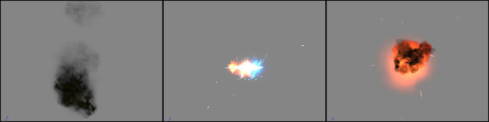
図 11.27 – ダメージ、砲口の閃光および破壊効果のパーティクルシステム。 9. TurretRotations 構造体の中に含まれる個々の回転には、デフォルトメッシュのポーズを行うためのデフォルト値を設定できます。
TurretRotations={(
IdleRotation=(Pitch=-8192,Yaw=0,Roll=0),
AlertRotation=(Pitch=0,Yaw=0,Roll=0),
DeathRotation=(Pitch=8192,Yaw=4551,Roll=10922)
)}

図 11.28 – TurretMesh assuming the Idle、 Alert および Death ポーズを仮定した TurretMesh 。 10. 最後に、回転率、発砲率、ライフ、発射物クラス、照準エラーのような、多くの他のプロパティすべてにデフォルト値を与えます。更に、同様に 1 つの継承されたプロパティ bEdShouldSnap を設定します。 UnrealEd の内部でそのインスタンスを配置する時に砲台をグリッドにスナップするために、本変数には、 True 値が設定されます。
TurretRotRate=128000 TurretHealth=500 AimRotError=128 ProjClass=class'UTGame.UTProj_LinkPowerPlasma' RoundsPerSec=3 bEdShouldSnap=true11. 作業結果を失わないためにスクリプトを保存してください。 <<<< チュートリアルの終了 >>>>
チュートリアル 11.9 – 砲台、 パート V: POSTBEGINPLAY() イベント
MU_AutoTurret クラスに戻ると、 PostBeginPlay() イベントはオーバーライドされ、コントローラを生成し、砲台を初期化するために使用されます。 1. ConTEXT および MU_AutoTurret.uc スクリプトをオープンしてください。 2. 砲台クラスでオーバーライド可能なように、 PostBeginPlay() イベントを宣言してください。
event PostBeginPlay()
{
}
3. 親クラス内に存在する何らかの基本的な初期化の実行を確実に行うために AIController クラスの PostBeginPlay() を呼び出してください。
Super.PostBeginPlay();4. MaxTurretHealth プロパティは、 TurretHealth プロパティの最初の値に設定されます。これは、いつでも砲台にダメージを与えるパーセントを決定するために後ほど利用されます。 また、 OrigMinRotRate の値は MinTurretRotRate の値へと初期化され、 FullRevTime は、回転ユニットが 1 回完全回転する値を MinTurretRotRate で除算して計算されます。
MaxTurretHealth = TurretHealth; OrigMinRotRate = MinTurretRotRate; FullRevTime = 65536.0 / Float(MinTurretRotRate);5. PivotController 変数を初期化するために、 SkeletalMeshComponent へ代入する AnimTree 内に配置された、 SkelControlSingleBone 骨格コントローラへの参照を見つける必要があります。 TurretBones.PivotControllerName の値を、コンポーネントの FindSkelControl() 関数に渡して、 SkelControlSingleBone に対して結果をキャストすることで、これを実現させます。
PivotController=SkelControlSingleBone(Mesh.FindSkelControl(TurretBones.PivotControllerName));注記 : このクラス内で TurretMesh 変数を宣言していますが、コードでは、 SkeletalMeshComponent を参照するために Mesh 変数を使用しています。もしも、デフォルトプロパティ で、これらの変数の両方が SkeletalMeshComponent に代入されていたことを思い起こせば、どちらも同じコンポーネントを参照することになります。 Mesh 変数がこのコードで使用されているのは、文字数が少なく入力時の手間が少ないからです。 6. 次に、 SkeletalMeshComponent の GetSocketWorldLocationAndRotation() 関数へ、 TurretBones.FireSocket と共に、 FireLocation および FireRotation 変数を渡し、これらの変数を初期化します。
Mesh.GetSocketWorldLocationAndRotation(TurretBones.FireSocket,FireLocation,FireRotation);この関数の 2 番目および 3 番目のパラメータは、ご承知の通り、関数が、引き渡されたこれらの変数の値を設定することを表す Out 指定子を使用して宣言されています。 7. TurretEmitters 構造体内で指定された ParticleSystems は、ダメージ、破壊、砲口の閃光の効果について、 3 つの ParticleSystemComponents に対するテンプレートとして代入されます。
DamageEffect.SetTemplate(TurretEmitters.DamageEmitter); MuzzleFlashEffect.SetTemplate(TurretEmitters.MuzzleFlashEmitter); DestroyEffect.SetTemplate(TurretEmitters.DestroyEmitter);8. 3 つの ParticleSystemComponents は、 SkeletalMeshComponent の AttachComponentToSocket() 関数を使用して SkeletalMeshComponent の適切なソケットにアタッチされます。
Mesh.AttachComponentToSocket(DamageEffect, TurretBones.DamageSocket); Mesh.AttachComponentToSocket(MuzzleFlashEffect, TurretBones.FireSocket); Mesh.AttachComponentToSocket(DestroyEffect, TurretBones.DestroySocket);

図 11.29 – 骨格メッシュ内のソケットの位置にアタッチされたパーティクルシステム。 9. 最後に、砲台の Physics を、 PHYS_None に設定します。そのため、砲台に対して、物理は適用されません。
SetPhysics(PHYS_None);10. 作業結果を失わないように、スクリプトを保存してください。 <<<< チュートリアルの終了 >>>>
チュートリアル 11.10 – 砲台、パート VI: ROTATION 関数
Idle、 Alert および Death の回転で設定されるポーズを取るために、砲台スクリプトの各所で、砲台は与えられた回転量に回転可能である必要があります。この回転の様子を滑らかでリアルにするために、スナッピング効果を起こす直接的な回転の設定を行う代りに補間が使用されます。このプロセスには 2 つの関数が含まれます。 1 つの関数は、すべての必要なプロパティを設定し、ループを行うためのタイマーを設定します。もう 1 つの関数は、補間された回転を計算し、骨格コントローラを合わせて調整します。 1. ConTEXT および MU_AutoTurret.uc スクリプトをオープンしてください。 2. 追加される最初の関数は、 DoRotation() と名付けられ、 NewRotation と名付けられた 1 つの Rotator パラメータを持ちます。
function DoRotation(Rotator NewRotation, Float InterpTime)
{
}
3. 2 つめの関数は、 RotateTimer() と名付けられたタイマー関数で、パラメータはありません。
function RotateTimer()
{
}
4. 最初に DoRotation() 関数が砲台クラスの StartRotation、 TargetRotation および RotationAlpha プロパティを初期化します。
StartRotation = PivotController.BoneRotation; TargetRotation = NewRotation; RotationAlpha = 0.0; TotalInterpTime = InterpTime;お気づきのように、 StartRotation は、 AnimTree 内の骨格コントローラの BoneRotation プロパティによって指定された砲台の現在の回転に設定されます。TargetRotation は、関数に渡される NewRotation に設定されます。それから、 RotationAlpha は、新たな補間を開始するために 0.0 にリセットされて、 TotalInterpTime は、関数内に渡される経過時間に設定されます。 5. 数値が初期化されたら、 0.033 秒ごと、すなわち 1秒に 30 回 RotateTimer() 関数を呼び出すため、ループ処理のタイマーが設定されます。
SetTimer(0.033,true,'RotateTimer');6. RotateTimer() 関数の内部では、RotationAlpha が、タイマーの変化率と同一の値、すなわち 0.033 毎に増やされます。
RotationAlpha += 0.033;7. RotationAlpha が TotalInterpTime 以下の場合は、補間が計算され、 BoneRotation プロパティには、新たな回転が設定されます。
if(RotationAlpha <= TotalInterpTime) PivotController.BoneRotation = RLerp(StartRotation,TargetRotation,RotationAlpha,true);関数に渡された開始時の回転、終了時の回転および現在のアルファ値に基づき、 Object クラス内で定義された RLerp() 関数は、補間計算を実施します。 Bool 型の最後のパラメータは、開始時の回転から終了時の回転を補間するために最短距離を利用するかどうかを指定します。

図 11.30 – 砲台を回す骨格コントローラの BoneRotation の更新。 8. それ以外、すなわち、 RotationAlpha 値が 1.0 より大きい場合は、補間の終了を示し、タイマーはクリアされます。
else
ClearTimer('RotateTimer');
9. 作業結果を失わないように、スクリプトを保存してください。
<<<< チュートリアルの終了 >>>>
チュートリアル 11.11 – 砲台、パート VII: 状態宣言
砲台クラスは、砲台が実行できる 4 つの異なる動作を定義する 4 つの状態から成ります。この時点では、状態は骨格状態、または、プレースホルダーとして宣言され、単にどんなものがあるかがわかるだけです。これらの状態の本体は今後のチュートリアルで記述されます。 1. ConTEXT および MU_AutoTurret.uc スクリプトをオープンしてください。 2. 宣言された最初の状態は Idle 状態です。これは、砲台のデフォルト初期状態です。この機能は、全く読んで字の通りです : これは、砲台をアイドルまたはスタンバイにして、適切な動作を取るため、砲台を強制的に他の何らかの状態にする、外部からの何らかのイベントを待ちます。
auto state Idle
{
}
ゲーム開始時に、強制的に砲台をこの状態にするために、状態の宣言中に Auto 指定子を使用していることに留意してください。
3. 砲台クラス内で宣言される次の状態は、 Alert 状態です。この状態では、標的として攻撃するため、砲台は、視認可能な敵を活発に索敵して、アイドル状態よりは、警戒レベルが上がったことを示します。
state Alert
{
}
4. クラス内で宣言される次の状態は Defend 状態です。敵が発見されたら、 Defend 状態に入ります。この状態では、敵への照準合わせと、発砲の実行を取り扱います。
state Defend
{
}
5. 砲台クラスで宣言された最後の状態は、 Dead 状態です。これは、ライフが 0 に達した後にのみになる砲台に対しても最後の状態です。この状態は、すべての破壊効果を取り扱い、敵に対する索敵、照準または発砲のような他のすべての機能を停止します。
state Dead
{
}
6. 作業結果を失わないように、スクリプトを保存してください。
<<<< チュートリアルの終了 >>>>
チュートリアル 11.12 – 砲台、パート VIII: GLOBAL TAKEDAMAGE() 関数
ここで作成している砲台は、ゲーム内のプレーヤーからダメージを受け、更には、破壊される必要があります。このダメージを受ける機能を操作するために、親クラスから継承された TakeDamage() 関数はオーバーライドされます。このチュートリアルは、この TakeDamage() 関数の設定を説明します。 1. ConTEXT および MU_AutoTurret.uc スクリプトをオープンしてください。 2. TakeDamage() イベントは、砲台クラス内で、そのダメージ効果とサウンドの再生を操作すると同時に、継承された Health 変数の部分に TurretHealth 変数を使用するために、継承されオーバーライドされます。オーバーライドを許可するため、このイベントを宣言してください。
event TakeDamage(int Damage,
Controller InstigatedBy,
vector HitLocation,
vector Momentum,
class<DamageType> DamageType,
optional TraceHitInfo HitInfo,
optional Actor DamageCauser )
{
}
3. 始めに、 TurretHealth プロパティは、 Damage パラメータとして渡される値を減算することにより調整されます。
TurretHealth -= Damage;4. 次に、 DamageEmitter が存在するかどうかを決定するための確認が実行されてから、ParticleSystemComponent の SetFloatParam() 関数を使用して、 DamageEffect の spawn(スポーン) 率のパラメータの値に対応した値を設定します。
if(TurretEmitters.DamageEmitter != None)
{
DamageEffect.SetFloatParameter(TurretEmitters.DamageEmitterParamName,FClamp(1-Float(TurretHealth)/Float(MaxTurretHealth)),0.0,1.0));
}
上述のコードの大部分は、かなり自明であるはずです。パラメータの名前は、最初のパラメータとして SetFloatParameter() 関数へ渡され、 2 番目のパラメータとして渡されるパラメータに値が代入されます。パーティクルシステム内のパラメータは、砲台に与えられたダメージの相対量を示す 0.0 から 1.0 の間の値を見込んでいます。この値は、毎秒 spawn(スポーン) するためのパーティクルの量を決める新たな範囲にマップされます。
FClamp(1-Float(TurretHealth)/Float(MaxTurretHealth)),0.0,1.0)この値は、砲台の残りライフのパーセントを得るため、現在のライフ値を初期最大ライフ値で除算して計算されます。結果は、逆のパーセント、すなわちダメージ率を得るために 1.0 から減算されます。この値は、尺度を良くするために 0.0 および 1.0 の間でクランプされます。
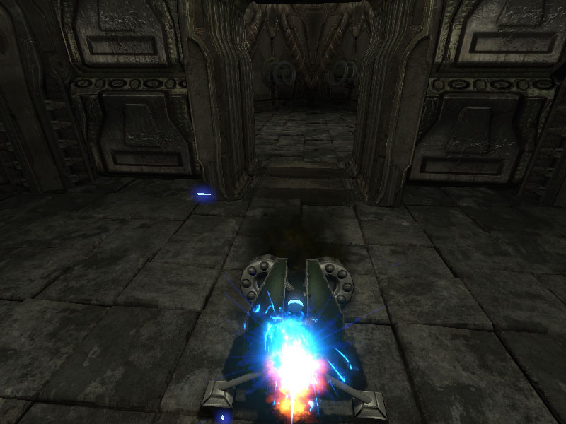
図 11.31 – 砲台がダメージを受けるにつれて、ダメージエミッタは多くのパーティクルを spawns(スポーン) します。 5. 砲台がダメージを受けた時に再生されるべき任意のサウンドは、ダメージ効果が調整された後に PlaySound() 関数を使用して再生されます。
if(TurretSounds.DamageSound != None) PlaySound(TurretSounds.DamageSound);6. 防御機構として、発砲対象で砲台にダメージを与える任意の Pawn は、砲台の敵として、照準の対象にします。 InstigatedBy パラメータはコントローラで、その Pawn がもしあれば、砲台の新しい EnemyTarget となります。
if(InstigatedBy.Pawn != None) EnemyTarget = InstigatedBy.Pawn;

図 11.32 – 砲台にダメージを与える Pawn は、新規の EnemyTarget となります。 7. 最後に、ライフが無くなってしまった場合は、砲台は Dead 状態となります。
if(TurretHealth <= 0)
{
GotoState('Dead');
}
8. 作業結果を失わないように、スクリプトを保存してください。この関数については、後のチュートリアル内で簡単に振り返ります。
チュートリアル 11.13 – 砲台、パート IX: GLOBAL TICK() 関数
砲台クラスのグローバル Tick() 関数は、照準を合わせて攻撃するために、砲台に対する視認可能な敵の索敵に責任を持ちます。この関数は、任意の状態の外部に存在して、砲台が Alert または Defend 状態にある時に利用されます。 1. ConTEXT および MU_AutoTurret.uc スクリプトをオープンしてください。 2. 前章で宣言された状態に続けて、それらの状態の本体の中で無いことを確認して、 Tick() 関数を宣言してください。
function Tick(Float Delta)
{
}
3. Tick() 関数の主な責任は、砲台の現在の標的で最も接近しているプレーヤーを見つけて、砲台に対する新たな敵を選択することです。これは、砲台が照準付けしている方向および問題になっているプレーヤーの方向のドット積の計算をおこない、それぞれその後のプレーヤーの結果と比較することが必要となります。 2 つのローカル Float 変数が、現在のドット積および現在の最も近接したドット積を格納するために使用されます。
local Float currDot; local Float thisDot;iterator(イテレータ) は比較対象の全てのプレーヤーのループ処理を行うために使用されます。イテレータ内の個々のプレーヤーに対する参照を保持するために UTPawn ローカル変数が必要です。
local UTPawn P;最後に、新たな敵が発見されたかどうかを指定して、どの状態に砲台を置くかを選択するためのコードを利用可能にして、ターゲットとして設定するために、ローカル Bool 変数が利用されます。
local Bool bHasTarget;それぞれのドット積計算の結果は、 -1 と 1 の間の値となります。 -1 は、砲台が狙っている方向とまったく反対側の方向を表し、 1 は、砲台の照準が直接行われていることを示します。 currDot は、 -1.01 の値に初期化されますので、任意のプレーヤーに対するドット積の結果は、初期値よりは高い値となるはずです。
currDot = -1.01;4. If/Else-文は、0.5 秒毎に 1 度のみ、砲台が破壊されていない時だけに、照準合わせを行わせるために使用されます。
if(GElapsedTime > 0.5 && !bDestroyed)
{
}
else
{
}
If ブロックの中では、 GElapsedTime および bHasTarget の値はリセットされます。
GElapsedTime = 0.0; bHasTarget = false;Else ブロックの中では、 GElapsedTime の値は、最後の Tick() 関数コールから経過した時間が増やされます。
GElapsedTime += Delta;If/Else-文は以下のようになります :
if(GElapsedTime > 0.5 && !bDestroyed)
{
GElapsedTime = 0.0;
bHasTarget = false;
}
else
{
GElapsedTime += Delta;
}
5. If ブロックに戻って、 AllPawns イテレータ関数は、現在の比較内ですべての UTPawns をループするために使用されます。
foreach WorldInfo.AllPawns(class'UTGame.UTPawn',P)
{
}
6. イテレータ内の If-文の条件として、すべての Actors に利用可能な FastTrace() 関数を使用して、砲台が現在のポーンに対して照準線を持つかどうかを決定するために簡単なトレースを実行します。この関数は、開始位置から最後の位置へトレースした時に、ワールドジオメトリが無かった場合は True をリターンします。
if(FastTrace(P.Location,FireLocation))
{
}

図 11.33 – 表示された Pawns のみが FastTrace() チェックをパスします。 7. トレースが成功した場合、砲台が照準した方向の間のドット積および砲台の発火点から現在のポーンへの距離が計算されます。
thisDot = Normal(Vector(PivotController.BoneRotation)) Dot Normal(((P.Location - FireLocation) << Rotation));

図 11.34 – ドット積は、砲台が予測されるターゲットとの正対状況を表す量を計算します。 8. pawn が活動可能、すなわち Health 値が 0 以上であると仮定すると、計算したばかりのドット積は、 currDot 値以上となり、現在のポーンは砲台の EnemyTarget として設定され、 currDot はこのドット積に設定され、少なくとも 1 つのターゲットが位置づけられたものとして bHasTarget は、 True に設定されます。
if(P.Health > 0 && thisDot >= currDot)
{
EnemyTarget = P;
currDot = thisDot;
bHasTarget = true;
}
9. イテレータの後で、砲台は、照準付けルーチンの結果を基にした適切な状態に向けられます。もし、標的が見つかり、砲台が 現在 Defend 状態でない場合は、 Defend 状態となります。そうではなく、もし、標的が見つからずに、砲台が現在 Defend 状態である場合は、代りに Alert 状態に送られます。その他すべての条件は、既に砲台が適切な状態に在るとして、無視されます。
if(bHasTarget && !IsInState('Defend'))
{
GotoState('Defend');
}
else if(!bHasTarget && IsInState('Defend'))
{
GotoState('Alert');
}
10. 作業結果を失わないように、スクリプトを保存してください。最終的な Tick() 関数は以下のようになるはずです :
function Tick(Float Delta)
{
local Float currDot;
local Float thisDot;
local UTPawn P;
local Bool bHasTarget;
currDot = -1.01;
if(GElapsedTime > 0.5 && !bDestroyed)
{
GElapsedTime = 0.0;
bHasTarget = false;
foreach WorldInfo.AllPawns(class'UTGame.UTPawn',P)
{
if(FastTrace(P.Location,FireLocation))
{
thisDot = Normal(Vector(PivotController.BoneRotation)) Dot
Normal(((P.Location - FireLocation) << Rotation));
if(P.Health > 0 && thisDot >= currDot)
{
EnemyTarget = P;
currDot = thisDot;
bHasTarget = true;
}
}
}
if(bHasTarget && !IsInState('Defend'))
{
GotoState('Defend');
}
else if(!bHasTarget && IsInState('Defend'))
{
GotoState('Alert');
}
}
else
{
GElapsedTime += Delta;
}
}
<<<< チュートリアルの終了 >>>>
チュートリアル 11.14 – 砲台、パート X: IDLE 状態の本体
以前のチュートリアルで述べたように、 Idle 状態は砲台に対するデフォルト状態です。実際に考慮するのは、砲台を休止位置まで回転し、周辺視野の移動中の敵の位置を決めて、ダメージを受ける可能性があれば、砲台を Alert 状態にすることです。 1. ConTEXT および MU_AutoTurret.uc スクリプトをオープンしてください。 2. Idle 状態では、 TakeDamage() イベントがオーバーライドされますが、グローバルバージョンの機能はすべて含んだものにするように希望します。基本的に、砲台が Idle 状態に在る時のみに適用される少量のコードを既存の TakeDamage() イベントに追加したいだけです。明らかに、イベント全体を状態にコピーして必要なものの追加もできますが、 UnrealScript は、状態内から関数やイベントのグローバルバージョンを呼び出す機能を提供して、無駄にコードを複写しないようにしています。 Idle 状態内で TakeDamage() イベントを宣言してください。
event TakeDamage( int Damage,
Controller InstigatedBy,
vector HitLocation,
vector Momentum,
class<DamageType> DamageType,
optional TraceHitInfo HitInfo,
optional Actor DamageCauser )
{
}
3. Global キーワードを使用して、すべてのパラメータをそのまま渡すことで、 TakeDamage() イベントのグローバルバージョンを直接呼び出します。
Global.TakeDamage(Damage,InstigatedBy,HitLocation,Momentum,DamageType,HitInfo,DamageCauser);4. ここで、現在のダメージを適用した結果、砲台が破壊されていない限りは、砲台を Alert 状態に置くために If 文を追加してください。このコードが実際に行うことは、敵に照準を合わせていない時、すなわち、プレーヤーが後ろから忍び寄り撃ったりした場合、に撃たれたり、ダメージを受けたりした際に、砲台を Alert 状態に置くことで、砲台は活動状態になり、現在の周辺視野のみではなく、活発に視認可能な敵の索敵を開始します。
if(TurretHealth > 0)
{
GotoState('Alert');
}
5. Tick() イベントも同様に Idle 状態内でオーバーライドされますが、実際は、そこに追加する代りに既存のバージョンを変更しなければなりません。グローバルバージョンでは、すべての表示可能な敵を探すのに対して、 Idle 状態のバージョンでは、 0.0 以上のドット積を持つものとして定義された、周辺視野内で動いている敵のみを探します。これは、既存の Tick() イベントのコードに対するとてもわずかな修正が必要ですので、グローバル Tick() イベントを Idle 状態の本体にコピーしてください。
function Tick(Float Delta)
{
local Float currDot,thisDot;
local UTPawn P;
local Bool bHasTarget;
currDot = -1.01;
if(GElapsedTime > 0.5 && !bDestroyed)
{
GElapsedTime = 0.0;
bHasTarget = false;
foreach WorldInfo.AllPawns(class'UTGame.UTPawn',P)
{
if(FastTrace(P.Location,FireLocation))
{
thisDot = Normal(Vector(PivotController.BoneRotation)) Dot
Normal(((P.Location - FireLocation) << Rotation));
if(P.Health > 0 && thisDot >= currDot)
{
EnemyTarget = P;
currDot = thisDot;
bHasTarget = true;
}
}
}
if(bHasTarget && !IsInState('Defend'))
{
GotoState('Defend');
}
else if(!bHasTarget && IsInState('Defend'))
{
GotoState('Alert');
}
}
else
{
GElapsedTime += Delta;
}
}
6. ポーンの速度に毎秒 16.0 ユニット以上を必要とし、ドット積にも 0.0 以上を必要とするために、最も内部の If-文の条件を修正してください。
if(P.Health > 0 && VSize(P.Velocity) > 16.0 && thisDot >= 0.0 && thisDot >= currDot)
{
EnemyTarget = P;
currDot = thisDot;
bHasTarget = true;
}

図 11.35 – 砲台の正面の Pawns のみが、標的の可能性のあるものとみなされます。 7. Idle 状態内で BeginIdling() という名前の新規関数が宣言されました。この関数は、タイマーとして呼び出されなければならないため、パラメータを持ちません。その作業は、アイドルポーズへの補間を開始して、 SleepSound SoundCue を再生することです。
function BeginIdling()
{
}
8. アイドルポーズへの補間は、砲台クラスに属する DoRotation() 関数を呼び出し、 TurretRotations 構造体の IdleRotation プロパティを渡すことで実行され、その持続時間は 1.0 秒です。
DoRotation(TurretRotations.IdleRotation, 1.0);

図 11.36 – 砲台は、回転して Idle ポジションになります。 9. TurretSounds 構造体の SleepSound プロパティが SoundCue を参照している場合は、 PlaySound() 関数を使用して再生されます。
if(TurretSounds.SleepSound != None) PlaySound(TurretSounds.SleepSound);10. すでに学んだように、 BeginState() イベントは、状態がアクティブになった時に実行されます。 Idle 状態では、必要に応じて、このイベントは警戒ポーズへの補間を開始して、砲台をアイドルポーズに置くために BeginIdling() 関数を呼び出し、それが指定されたと仮定して SleepSound SoundCue を再生します。 BeginState() イベントをその 1 つのパラメータ PreviousStateName と共に宣言してください。
event BeginState(Name PreviousStateName)
{
}
11. 始めに、もし、直前の状態が Alert 状態以外のどれかだったならば、砲台は、 idle(アイドル)ポーズへの補間を開始する前に alert(警戒) ポーズへの補間を行うべきです。これは、砲台が、単に アイドル-警戒-発砲-警戒-アイドル の同じ連続動作に常に従うことが理にかなっているように見えるため、選択された動作です。この補間には 1.0 秒かかりますので、 BeginIdling() 関数は 1.0 秒の経過時間を持つループ無しタイマーとして呼び出されます。
if(PreviousStateName != 'Alert')
{
DoRotation(TurretRotations.AlertRotation, 1.0);
SetTimer(1.0,false,'BeginIdling');
}

図 11.37 – 砲台は、始めに Idle 位置に進む前に Alert 位置へ回転する。 12. もし、直前の状態が他の任意の状態であれば、 BeginIdling() 関数は、即座に呼び出されるだけです。
else BeginIdling();13. 作業結果を失わないように、スクリプトを保存してください。 <<<< チュートリアルの終了 >>>>
チュートリアル 11.15 – 砲台、パート XI: ALERT 状態の本体 パート I
Idle 状態を砲台に対する DEFCON 5 程度とするならば、 Alert 状態は DEFCON 3 程度になります。砲台は、決して攻撃モードに入ってはいませんが、そうなる可能性が高いため用意はできています。 Alert 状態では、砲台はエリアを走査して、任意の視認可能な敵を活発に索敵します : 動作中か否かを問わず、そのようになります。このチュートリアルでは、 Tick() および IdleTimer() 関数が設定されます。 1. ConTEXT および MU_AutoTurret.uc スクリプトをオープンしてください。 2. Alert 状態中の Tick() 関数は、砲台クラスのグローバル Tick() 関数に小さなコードを追加するためにオーバーライドされます。この短いコードは、その回転をアニメートすることで砲台にエリアのスキャンを行わせます。 Alert 状態内で Tick() 関数を宣言してください。
function Tick(Float Delta)
{
}
3. この Tick() 関数内では、ローカル Rotator が必要になります。この回転は、砲台がエリアをスキャンすることをアニメートするために、砲台の現在の毎ティックの回転に加算される回転量です。
local Rotator AnimRot;4. この関数内の他の任意のコードを実行する前に、 Tick() 関数のグローバルバージョンが呼び出されます。
Global.Tick(Delta);5. AnimRot の Yaw プロパティは、 MinTurretRotRate を最後のティックから経過した時間、または Delta と積算して計算されます。それから、この Rotator が、 PivotController の BoneRotation プロパティとして指定される砲台の回転に加算されます。
AnimRot.Yaw = MinTurretRotRate * Delta; PivotController.BoneRotation += AnimRot;

図 11.38 – ピボットの Yaw 軸の周りの回転によって砲台はエリアをスキャンする。 6. Tick() 関数の最後の部分は、 RotLimit 構造体に従って任意の回転の制限に対して責任を持ちます。もし、 blimitYaw プロパティが True であり、現在の回転が RotLimitMin および RotLimitMax で設定した限界を超えた場合は、砲台の回転の方向を反転するため、 MinTurretRotrate の値に -1 を掛けます。
if(RotLimit.bLimitYaw)
{
if( PivotController.BoneRotation.Yaw >= RotLimit.RotLimitMax.Yaw ||
PivotController.BoneRotation.Yaw <= RotLimit.RotLimitMin.Yaw )
{
MinTurretRotRate *= -1;
}
}

図 11.39 – スキャンの回転に制限がかけられたため、方向が逆に変更されます。 7. IdleTimer() 関数は、簡単なタイマー関数であり、パラメータ無しで宣言されました。
function IdleTimer()
{
}
8. この関数の唯一の目的は、砲台が破壊されていない場合に、砲台を Idle 状態に戻すことです。
if(!bDestroyed)
{
GotoState('Idle');
}
9. 作業結果を失わないように、スクリプトを保存してください。
<<<< チュートリアルの終了 >>>>
チュートリアル 11.16 – 砲台、パート XII: ALERT 状態の本体 パート II
Alert 状態の説明の続きで、 BeginState() イベントは、 Alert 用に砲台の初期化を取り扱います。 PreviousStateName パラメータを用いて直前の状態に基づいた個別の動作を実行する機能を提供していますが、 Alert 状態の初期化では、同様に、砲台がどの状態から移りつつあるのかは考慮しません。この関数は、砲台をエリアのスキャンを開始するため、適切なポーズに置き、完全なスイープを実行するために必要な時間量を計算すると共に、スイープを実行するためにどの方向で砲台が回転を開始すべきかを決定します。 1. ConTEXT および MU_AutoTurret.uc スクリプトをオープンしてください。 2. Alert 状態に対して BeginState() イベントを宣言してください。
event BeginState(Name PreviousStateName)
{
}
3. 本イベントには、 2 つのローカル変数が必要です。最初はスイープを開始すべき初期回転を保持する Rotator です。この回転は、砲台の現在の Yaw 値で置き換えられた Yaw 値を持つ TurretRotations 構造体の AlertRotation プロパティで指定された回転です。もう 1 つのローカル変数は、連続する砲台のエリアのスイープの合計時間量を示す Float 値です。
local Rotator AlertRot; local Float RevTime;4. AlertRot 回転には、最初に AlertRotation の値が代入されます。それから、その Yaw 値は、この時点までに実行されたかもしれない何度かの完全回転を除去して、 0 から 65536 の範囲に正規化された砲台の現在の Yaw 値によって置き換えられます。
AlertRot = TurretRotations.AlertRotation; AlertRot.Yaw = PivotController.BoneRotation.Yaw % 65536;5. 砲台の Yaw 回転が制限されているかどうかに依存して、この時点で 2 つの方法のうちのどちらかが選ばれます。 RotLimit 構造体の bLimitYaw から判断して、 Yaw が制限されていた場合はエリアのスイープを実行する合計時間を計算する時にその制限を考慮しなければなりません。このスイープは、現在の yaw から 離れた限界点まで行き、その後近接する限界点に戻り、それから AlertRotation で指定された Yaw へのパンの実行から成ります。まず、 If-文の設定を行ってください。
if(RotLimit.bLimitYaw)
{
}
else
{
}
6. If ブロックの内部では、Yaw 回転の限界点の中間点と現在の Yaw 値を比較してどちらの限界点が遠いかを知るために、もう 1 つの If-文のチェックを行っています。
if(AlertRot.Yaw > Float(RotLimit.RotLimitMax.Yaw + RotLimit.RotLimitMin.Yaw) / 2.0)
{
}
else
{
}
指定された砲台の現在の回転で完全なスイープを実行するためにかかる時間は、最も遠い限界点と現在の回転の差を取り、その値を砲台の当初の最小回転率で除算することで計算されます。また、最小限界点から最大限界点までの完全スイープを一度行うために要する時間は、同じ方法で計算されて、前回の計算値に加算されます。最後に、最も遠い限界点から AlertRotation までパンするための時間が、今までの結果に加算されます。この値は、個々の If/Else ブロック中の RevTime 変数に代入されます。計算を行う際の唯一の違いは、限界点が保存され、減算オペランドの順番が保存されていることです。
if(AlertRot.Yaw > Float(RotLimit.RotLimitMax.Yaw + RotLimit.RotLimitMin.Yaw) / 2.0)
{
RevTime = (Float(AlertRot.Yaw - RotLimit.RotLimitMin.Yaw) / Float(OrigMinRotRate)) +
(Float(RotLimit.RotLimitMax.Yaw - RotLimit.RotLimitMin.Yaw) / Float(OrigMinRotRate)) +
(Float(RotLimit.RotLimitMax.Yaw - TurretRotations.AlertRotation.Yaw) / Float(OrigMinRotRate));
}
else
{
RevTime = (Float(RotLimit.RotLimitMax.Yaw - AlertRot.Yaw) / Float(OrigMinRotRate)) +
(Float(RotLimit.RotLimitMax.Yaw - RotLimit.RotLimitMin.Yaw) / Float(OrigMinRotRate)) +
(Float(TurretRotations.AlertRotation.Yaw - RotLimit.RotLimitMin.Yaw) / Float(OrigMinRotRate));
}
MinTurretRotRate は、開始時に砲台が回転しなければならない方向により、 OrrigTurretRotRate または OrigTurretRotRate を -1 で掛け合わせて、設定されます。
if(AlertRot.Yaw > Float(RotLimit.RotLimitMax.Yaw + RotLimit.RotLimitMin.Yaw) / 2.0)
{
RevTime = (Float(AlertRot.Yaw - RotLimit.RotLimitMin.Yaw) / Float(OrigMinRotRate)) +
(Float(RotLimit.RotLimitMax.Yaw - RotLimit.RotLimitMin.Yaw) / Float(OrigMinRotRate)) +
(Float(RotLimit.RotLimitMax.Yaw - TurretRotations.AlertRotation.Yaw) / Float(OrigMinRotRate));
MinTurretRotRate = -1 * OrigMinRotRate;
}
else
{
RevTime = (Float(RotLimit.RotLimitMax.Yaw - AlertRot.Yaw) / Float(OrigMinRotRate)) +
(Float(RotLimit.RotLimitMax.Yaw - RotLimit.RotLimitMin.Yaw) / Float(OrigMinRotRate)) +
(Float(TurretRotations.AlertRotation.Yaw - RotLimit.RotLimitMin.Yaw) / Float(OrigMinRotRate));
MinTurretRotRate = OrigMinRotRate;
}
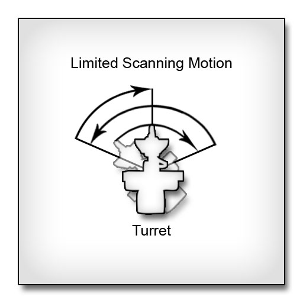
図 11.40 – Yawで制限を受けた砲台のスキャン動作の１つの可能性。 7. BeginAlert() 関数内の主要な Else ブロックは、限界の負担がないため、もっと直接的です。この場合は、砲台は、現在の回転から AlertRotation に戻るように長い距離を回転します。最初に、 RevTime は、 FullRevTime 値に初期化されます。
RevTime = FullRevTime;次に、どちらの方向に砲台を回転したらよいかを決定するために、現在の回転が AlertRotation と比較されます。反回転分が AlertRotation の Yaw プロパティに加算されます。現在の回転をその値と比較確認することで、砲台は 2 つの半球のどちらを向くかを絞り込むことができます。
if(AlertRot.Yaw > (TurretRotations.AlertRotation.Yaw + 32768))
{
}
else
{
}
完全回転時間から、取り除かれる時間量は、現在の回転と AlterRotation または AlertRotation からの完全な一回転の間の差分を取ることによって計算されます。この値は、 OrigTurretRotRate によって除算されます。これらの計算の中では、 現在の回転を基に、取り除く必要のある完全な回転の一部分を見つけるような計算を行って負の値の計算結果となるような命令を受けて減算が実施されるべきです。
if(AlertRot.Yaw > (TurretRotations.AlertRotation.Yaw + 32768))
{
RevTime += Float(AlertRot.Yaw - (TurretRotations.AlertRotation.Yaw + 65536)) /
Float(OrigMinRotRate);
}
else
{
RevTime += Float(TurretRotations.AlertRotation.Yaw - AlertRot.Yaw) /
Float(OrigMinRotRate);
}
MinTurretRotRate の値は、前回のステップと同様に設定されます。
if(AlertRot.Yaw > (TurretRotations.AlertRotation.Yaw + 32768))
{
RevTime += Float(AlertRot.Yaw - (TurretRotations.AlertRotation.Yaw + 65536)) /
Float(OrigMinRotRate);
MinTurretRotRate = -1 * OrigMinRotRate;
}
else
{
RevTime += Float(TurretRotations.AlertRotation.Yaw - AlertRot.Yaw) /
Float(OrigMinRotRate);
MinTurretRotRate = OrigMinRotRate;
}
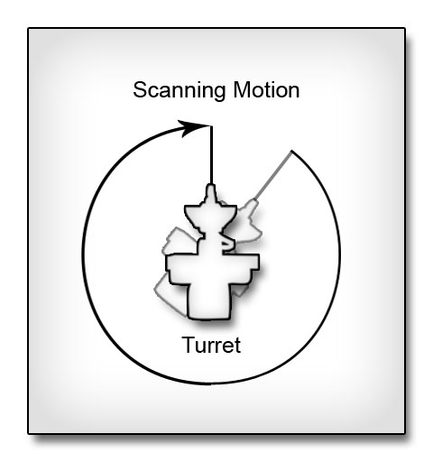
図 11.41 – 限界を設けない砲台のスキャン動作の 1 例。 8. これらの 4 つのルーチンの 1 つによって RevTime および MinTurretRotrate が設定された後に、 IdleTimer() 関数を実行するために、タイマーが全ての If-文の外側に設定されます。タイマーの持続時間は、 AlertRot ポーズへの初期回転を行うために RevTime + 1.0 秒となります。
SetTimer(RevTime + 1.0,false,'Idletimer');9. タイマーが設定されると、DoRotation() 関数を使用して、 AlertRot に対する補間が開始されます。
DoRotation(AlertRot, 1.0);10. 最後に、指定されていれば、 WakeSound SoundCue が再生されます。
if(TurretSounds.WakeSound != None) PlaySound(TurretSounds.WakeSound);11. 作業結果を失わないように、スクリプトを保存してください。 <<<< チュートリアルの終了 >>>>
チュートリアル 11.17 – 砲台、パート XIII: DEFEND 状態の本体 パート I
砲台の発砲機能は 2 つの関数によって操作されます。最初の関数は、 TimedFire() という名前で、発射物を spawns(スポーン) し、砲口の閃光をアクティブにして、発砲音を再生します。 2 つめの関数は、StopMuzzleFlash() で、その名前から想像できるように砲口の閃光をアクティブで無くするだけです。このチュートリアルでは、これら 2 つの関数の作成について説明します。 1. ConTEXT および MU_AutoTurret.uc スクリプトをオープンしてください。 2. StopMuzzeFlash() 関数は、とても簡単ですので、それから始めましょう。 Defend 状態の本体中に、パラメータ無しで、この関数を宣言してください。
function StopMuzzleFlash()
{
}
3. 砲口の閃光のパーティクルシステムは、 ParticleSystemComponent の DeactivateSystem() を呼び出すことで、停止します。 StopMuzzleFlash() 関数の完全な内容は以下の通りです。
MuzzleFlashEffect.DeactivateSystem();4. TimedFire() 関数は、砲台が Defend 状態を開始した時にループ設定され、砲台が Defend 状態を抜けた時にクリアされるタイマー関数です。この関数を、ここで宣言してください。
function TimedFire()
{
}
5. ローカルの Projectile 変数は、 spawned(スポーンされた) 発射物を参照するために必要です。
local Projectile Proj;6. FireRotation 変数から得られた回転を使用する FireLocation を ProjClass 変数内で指定されたクラスを使用して、発射物が spawned(スポーン) され、 Proj ローカル変数へ代入されます。
Proj = Spawn(ProjClass,self,,FireLocation,FireRotation,,True);7. spawn(スポーン) が成功して、発射物をまだ削除しようとしていない場合は、発射物が移動すべき方向を渡して、発射物の Init() 関数が呼び出されます。この関数は、関数に渡される方向 Vector をキャストすることで発射物の回転を設定し、その Velocity を適切に初期化します。
if( Proj != None && !Proj.bDeleteMe )
{
Proj.Init(Vector(FireRotation));
}
注記 : このコードは、既存の UT3 武器クラスの１つから直接借用しました。新規のコードを記述する時にモデルとして同様な既存クラスを使用することは、いつでも良いアイディアです。

図 11.42 – 発射物は spawned(スポーンされ) 砲台が狙いを定めた方向の速度で初期化されます。 8. 次に、砲口の閃光がアクティブになり、砲口の閃光の放射が指定されたとみなし、砲口の閃光を終了するまでのタイマーが開始されます。
if(TurretEmitters.MuzzleFlashEmitter != None)
{
MuzzleFlashEffect.ActivateSystem();
SetTimer(TurretEmitters.MuzzleFlashDuration,false,'StopMuzzleFlash');
}

図 11.43 – アクティブになった時には、砲口の閃光の効果が視認可能になります。 9. 最後に、デザイナーによって指定された場合は、発砲音が再生されます。
if(TurretSounds.FireSound != None) PlaySound(TurretSounds.FireSound);10. BeginFire() 関数は、TimedFire() 関数に対してループを行うタイマーを設定することで発砲プロセスを開始するタイマー関数であり、 bCanFire 変数をトグルすることでターゲッティングのプロセスを可能にします。この関数を宣言してください。
function BeginFire()
{
}
11. RoundsPerSec の値が 0 より大きければ、 TimedFire() 関数は RoundsPerSec プロパティの逆数として計算された率で実行するように設定され、ループ設定されます。また、 bCanFire プロパティは True に設定されます。
if(RoundsPerSec > 0)
{
SetTimer(1.0/RoundsPerSec,true,'TimedFire');
bCanFire = true;
}
12. 作業結果を失わないように、スクリプトを保存してください。
<<<< チュートリアルの終了 >>>>
チュートリアル 11.18 – 砲台、パート XIV: DEFEND 状態の本体 パート II
Defend 状態の続きですが、 BeginState() および EndState() イベントが、 Defend 状態を初期化して、終了するために宣言されます。 1. ConTEXT および MU_AutoTurret.uc スクリプトをオープンしてください。 2. PreviousStateName パラメータと共に BeginState() イベントを宣言してください。
event BeginState(Name PreviousStateName)
{
}
3. 砲台が Alert 状態から Defend 状態に成る場合は、うっかり砲台が Idle 状態に置かれることを防ぐために IdleTimer が動作中であれば、クリアしなければなりません。
if(PreviousStateName == 'Alert')
{
if(IsTimerActive('IdleTimer'))
ClearTimer('IdleTimer');
}
4. bCanFire プロパティは、望まない照準動作を避けるため、常に False に初期設定されます。
bCanFire = false;5. BeginState() イベントにおいても、 FireLocation および FireRotation のプロパティは、 SkeletalMeshComponent の GetSocketWorldLocationAndRotation() 関数を呼び出し、それら 2 つの変数を渡すことで、現在の砲口の先端に位置するソケットの位置および回転によって初期化されます。
Mesh.GetSocketWorldLocationAndRotation(TurretBones.FireSocket,FireLocation,FireRotation);6. 次に、砲台は、 DoRotation() 関数を使って現在の敵と正対するための補間を行います。
DoRotation(Rotator((EnemyTarget.Location - FireLocation) << Rotation), 1.0);以下の計算は、砲台の先端から敵までのベクタを求め、ワールド空間に変換します。そのため、結果の Vector は、砲台が敵を狙うために必要な回転を得るために Rotator にキャストされます。
Rotator((EnemyTarget.Location - FireLocation) << Rotation)

図 11.44 – 砲台は、 EnemyTarget と直面するために回転します。 7. デザイナーによって指定されているならば、 SpinUpSound が再生されます
if(TurretSounds.SpinUpSound != None) PlaySound(TurretSounds.SpinUpSound);8. BeginState() イベントの最後のステップでは、 1.0 秒経過後に BeginFire() 関数を実行するためにタイマーを開始します。これにより砲台が何らかの砲撃の照準を開始する前に回転の補間を完了させます。
SetTimer(1.0,false,'BeginFire');9. EndState() イベントは、 1 つの Name パラメータのみを持つという点で BeginState() イベントの宣言とよく似ています。
event EndState(Name NewStateName)
{
}
10. Defend 状態のこのイベントの唯一の目的は、砲台の発砲を停止するために、 TimedFire() タイマーをクリアすることです。
ClearTimer('TimedFire');
11. 作業結果を失わないように、スクリプトを保存してください。
<<<< チュートリアルの終了 >>>>
チュートリアル 11.19 – 砲台、パート XV: DEFEND 状態の本体 パート III
Defend 状態の最後の部分は、状態の Tick() 関数内に含まれる照準付けのコードです。 1. ConTEXT および MU_AutoTurret.uc スクリプトをオープンしてください。 2. Defend 状態内の Tick() 関数を宣言してください。
function Tick(Float Delta)
{
}
3. Tick() 関数のこのバージョンでは、ローカルの Int と共に照準付けの計算を実行するために 2 つのローカル Rotator が必要です。
local Rotator InterpRot; local Rotator DiffRot; local Int MaxDiffRot;4. 何らかの新規コードを追加する前に、関数がオーバーライドされるといっても、標的を捕捉するコードは依然として実行されるので、 Tick() 関数のグローバル実装は呼び出される必要があります。
Global.Tick(Delta);5. Tick() 関数内の照準付けのコードは、砲台が発砲を許可された時だけに実行されます。
if(bCanFire)
{
}
6. If-文の内部では、砲台から敵までの方向 Vector が計算されます。これは、敵の動きを追跡するために毎ティック計算されます。
EnemyDir = EnemyTarget.Location - Location;

図 11.45 – EnemyDir は、砲台から EnemyTarget への方向です。 7. 次に、以下の条件のいずれかに合致した時に、すべての照準付けの変数は初期化またはリセットされます。
- 新たな敵の捕捉
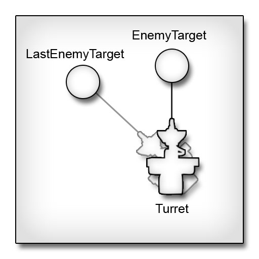
図 11.46 – 砲台は新たな EnemyTarget を持ちます。
- 現在の敵が移動
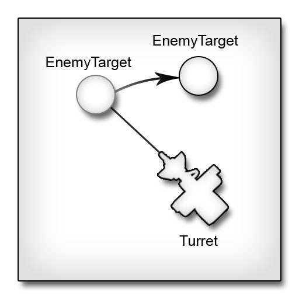
図 11.47 – 砲台の EnemyTarget は移動中です。
- 現在の照準付けの補間が完了

図 11.48 – 砲台は、固定した EnemyTarget に正対するために回転しました。
if( EnemyTarget != LastEnemyTarget ||
EnemyDir != LastEnemyDir ||
ElapsedTime >= TotalInterpTime )
{
}
a. 始めに、 LastEnemyTarget および LastEnemyDir 変数は、現在の値で更新されます。
8. さもなければ、現在の補間の経過時間が増やされます。
LastEnemyDir = EnemyDir; LastEnemyTarget = EnemyTarget;b. 次に、補間のための開始および終了回転値が初期化されます。
StartRotation = PivotController.BoneRotation; TargetRotation = Rotator((EnemyTarget.Location - FireLocation) << Rotation);c. それから、開始および終了回転の間の差分を取ることで DiffRot が計算されます。次いで、 MaxDiffRot が 結果の DiffRot の Pitch、 Yaw または Roll の最大の要素を検索して計算されます。 1 つの式でこの計算を実行するために 2 つの Max() 関数の呼出しが入れ子に成っています。
DiffRot = TargetRotation - StartRotation; MaxDiffRot = Max(Max(DiffRot.Pitch,DiffRot.Yaw),DiffRot.Roll);d. 希望する回転への補間に必要な合計時間は、 MaxDiffRot を MaxTurretRotRate で除算してその結果の絶対値を取ることで計算されます。
TotalInterpTime = Abs(Float(MaxDiffRot) / Float(MaxTurretRotRate));e. 最後に、 ElapsedTime は、最後のティックからの経過時間と同じに設定します。
ElapsedTime = Delta;結果の If ブロックは以下の通りです:
if( EnemyTarget != LastEnemyTarget ||
ElapsedTime >= TotalInterpTime ||
EnemyDir != LastEnemyDir )
{
LastEnemyDir = EnemyDir;
LastEnemyTarget = EnemyTarget;
StartRotation = PivotController.BoneRotation;
TargetRotation = Rotator((EnemyTarget.Location - FireLocation) << Rotation);
DiffRot = TargetRotation - StartRotation;
MaxDiffRot = Max(Max(DiffRot.Pitch,DiffRot.Yaw),DiffRot.Roll);
TotalInterpTime = Abs(Float(MaxDiffRot) / Float(MaxTurretRotRate));
ElapsedTime = Delta;
}
else
{
ElapsedTime += Delta;
}
9. 補間に必要なすべての変数が設定できれば、補間に対する現在のアルファ値が計算され、補間が実行されて、結果は InterpRot のローカル Rotator に代入されます。
RotationAlpha = FClamp(ElapsedTime / TotalInterpTime,0.0,1.0); InterpRot = RLerp(StartRotation,TargetRotation,RotationAlpha,true);

図 11.49 – 砲台は、ティック毎に最終的な希望する回転に向かう経路中の一部の回転を行っています。 10. 結果の回転は、デザイナーによって実装される可能性のある、任意の回転制限によって制限を受けます。
if(RotLimit.bLimitPitch)
InterpRot.Pitch = Clamp(InterpRot.Pitch,
RotLimit.RotLimitMin.Pitch,
RotLimit.RotLimitMax.Pitch );
if(RotLimit.bLimitYaw)
InterpRot.Yaw = Clamp( InterpRot.Yaw,
RotLimit.RotLimitMin.Yaw,
RotLimit.RotLimitMax.Yaw );
if(RotLimit.bLimitRoll)
InterpRot.Roll = Clamp( InterpRot.Roll,
RotLimit.RotLimitMin.Roll,
RotLimit.RotLimitMax.Roll );
11. 最後に補間された回転は、砲台を更新するために PivotController の BoneRotation へ代入されます。
PivotController.BoneRotation = InterpRot;12. 発砲時の位置および回転の変数は、砲台の新しい方向で更新されます。
Mesh.GetSocketWorldLocationAndRotation(TurretBones.FireSocket,FireLocation,FireRotation);13. 最後に、新しい発砲時の回転は、ランダムな照準エラーで調整されます。
FireRotation.Pitch += Rand(AimRotError * 2) - AimRotError; FireRotation.Yaw += Rand(AimRotError * 2) - AimRotError; FireRotation.Roll += Rand(AimRotError * 2) - AimRotError;0 から AimRotError の 2 倍の値の間のランダムな整数を計算します。結果の値は、 –AimRotError および AimRotError の間のランダムな値を効率的に生成するように AimRotError で補正されます。このランダムな値は、 FireRotation の個々のコンポーネントに加算されます。
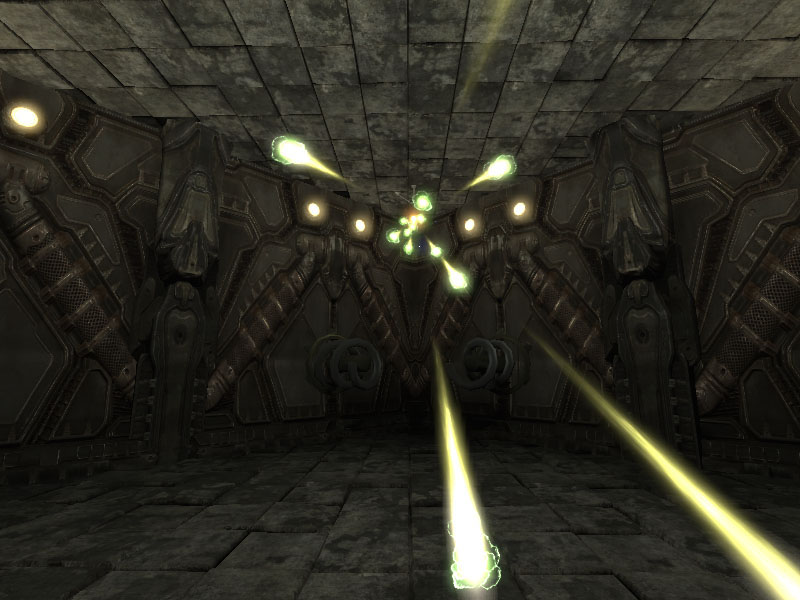
図 11.50 – これらの発射物の軌道の変化はランダムに補正された砲台の照準に依存します。 14. 作業結果を失わないためにスクリプトを保存してください。 <<<< チュートリアルの終了 >>>>
チュートリアル 11.20 – 砲台、パート XVI: DEAD 状態の本体
砲台クラスに属する最後の状態は Dead 状態です。この状態には、標的の捕捉やダメージを与える機能の実行を行わないことを確実にすると共にすべての破壊効果を実行する責任があります。 1. ConTEXT および MU_AutoTurret.uc スクリプトをオープンしてください。 2. Tick() および TakeDamage() 関数は、この状態では無視されますので、もはや実行されません。ignores Tick, TakeDamage;3. PlayDeath() 関数は破壊効果の再生を操作するタイマー関数です。
function PlayDeath()
{
}
4. PlayDeath() 関数では、デザイナーによって設定されていれば、破壊パーティクル効果が再生されます。
if(TurretEmitters.DestroyEmitter != None) DestroyEffect.ActivateSystem();
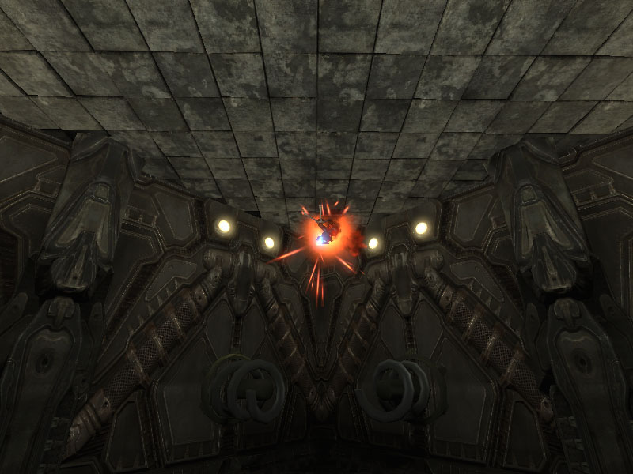
図 11.51 – デフォルト破壊効果がアクティブになります。 5. 戦闘不能状態となる際のサウンドが存在していれば、直ぐに再生されます。
if(TurretSounds.DeathSound != None) PlaySound(TurretSounds.DeathSound);6. DestroyedMesh が、デザイナーによって選択されていた場合は、砲台の新たな骨格メッシュとして設定されます。
if(DestroyedMesh != None) Mesh.SetSkeletalMesh(DestroyedMesh);7. 最後に、 bStopDamageEmmiterOnDeath が設定されていれば、ダメージパーティクル効果は、アクティブで無くなります。
if(TurretEmitters.bStopDamageEmitterOnDeath) DamageEffect.DeactivateSystem();8. bRandomDeath 変数が、 True に設定されているイベント中では、何らかの回転の限界を考慮してながら、砲台はランダム回転を作成し、回転を補間しなければなりません。 DoRandomDeath() 関数はこの機能を取り扱います。
function DoRandomDeath()
{
}
9. DeathRot という名前のローカル Rotator は、ランダムな回転を保持するために使用されます。
local Rotator DeathRot;10. RotRand() 関数はランダムな回転を計算するために使用されます。 Roll コンポーネントを含めるために、関数には True 値が渡されます。計算結果の回転は、 DeathRot 変数に代入されます。
DeathRot = RotRand(true);11. それから、新しい回転のコンポーネントは、任意の設定済みの回転限界に従ってクランプされます。
if(RotLimit.bLimitPitch)
DeathRot.Pitch = Clamp( DeathRot.Pitch,
RotLimit.RotLimitMin.Pitch,
RotLimit.RotLimitMax.Pitch );
if(RotLimit.bLimitYaw)
DeathRot.Yaw = Clamp( DeathRot.Yaw,
RotLimit.RotLimitMin.Yaw,
RotLimit.RotLimitMax.Yaw );
if(RotLimit.bLimitRoll)
DeathRot.Roll = Clamp( DeathRot.Roll,
RotLimit.RotLimitMin.Roll,
RotLimit.RotLimitMax.Roll );
12. 最後に新しい回転に砲台を補間するために制限された DeathRot を渡して DoRotation() 関数が呼び出されます。
DoRotation(DeathRot, 1.0);
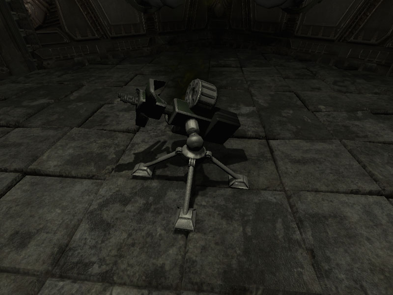
図 11.52 – 砲台では、ランダム回転を仮定します。 13. BeginState() イベントは、以前の 2 つの関数を起動するために、 Dead 状態で使用されます。
event BeginState(Name PreviousStateName)
{
}
14. 第 1 に、 bDestroyed 変数は、破壊された砲台を識別するために設定されます。
bDestroyed = true;15. ランダムデス回転が使用されないならば、 TurretRotations 構造体内で指定された DeathRotation を渡して DoRotation() 関数が呼び出されます。
if(!TurretRotations.bRandomDeath) DoRotation(TurretRotations.DeathRotation, 1.0);さもなければ、 DoRandomDeath() 関数が呼び出される。
else DoRandomDeath();

図 11.53 – 砲台は、 DeathRotation へ回転します。 16. それから、新たな回転の完了までの補間の後で PlayDeath() 関数を実行するためにタイマーを設定します。
SetTimer(1.0,false,'PlayDeath');17. 作業結果を失わないようにスクリプトを保存してください。 <<<< チュートリアルの終了 >>>>
チュートリアル 11.21 砲台、パート PART XVII – コンパイルおよびテスト
砲台に関するすべてのコードが準備できたら、 UnrealEd の中でスクリプトのコンパイルおよびテストを実行できます。 1. DVD で本章のために提供されたファイルと共に TurretContent.upk のファイルを Unpublished\CookedPC ディレクトリにコピーしてください。 2. スクリプトをコンパイルして、文法エラーが有ったら修正してください。 3. 本章のファイルと共に提供された UnrealEd および DM-CH_11_Turret.ut3 マップをオープンしてください。本マップは、本書を通して広く使用されたテストマップの修正版ですので、なじみ深く見えるかもしれません。
図 11.54 – DM-CH_11_Turret マップ。 4. Generic Browser(汎用ブラウザ) をオープンして、 Actor Classes タブに移動してください。 Pawn セクションを拡張して、リストから MU_AutoTurret を選択してください。
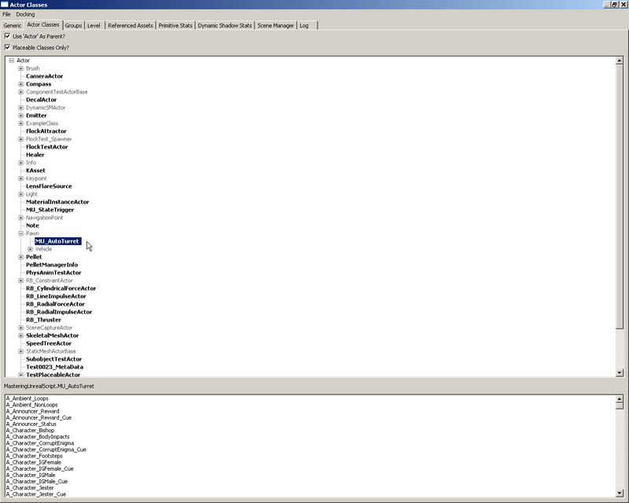
図 11.55 – Actor Browser 内の MU_AutoTurret クラス。 5. 透視図内で右クリックして、 Add MU_AutoTurret Here を選択してください。砲台アクタはマップ内に現れるべきです。 X-軸の周りで 180 度、または、 Properties Window 内の Movement->Rotation->Roll プロパティを調整して、砲台を回転して、砲台を上下さかさまにしてください。 部屋の奥の近くに 3 PlayerStarts で、部屋の天井に配置してください。

図 11.56 – 砲台アクタはマップ内に配置されます。 6. 砲台アクタを選択して、 Properties Window をオープンするために F4 を押してください。編集可能なプロパティを表示するために Turret カテゴリを拡張してください。何らかの調整が希望であれば自由に行って良いですが、初期テスト実行プロセスではデフォルト処理は正常に動作すべきです。 7. ツールバー上の Rebuild All ボタンを押してマップをリビルドしてください。それから、隣接する空室内で右クリックして、 Play From Here を選択してください。 8. Tab を押してコンソールをオープンして、マップ中を飛行し砲台からのダメージを受けることを避けるために 'ghost' と入力してください。砲台のある部屋に移動してください。砲台は照準を合わせ、発砲を開始するはずです。

図 11.57 – 砲台はプレーヤーに発砲しています。 9. 動作中の砲台をもっとよく見るために、コンソールを再度オープンして、マップに 3 つのボットを追加するために‘addbots 3’と入力してください。砲台は、新たなボットに照準を合わせて、発砲を開始するはずです。砲台に新たな敵を選択させるために、自分自身は部屋を出て、また戻らなければならないかもしれません。

図 11.58 – ボットは砲台によって砲撃されています。 10. Esc キーを押してマップを終了してください。 RotLimit 回転のような、プロパティで遊び続け、意図したとおりに全てが動作することを確かめるためにマップのテストを継続してください。 11. 設定を保存したい場合は、新たな名前でマップを保存してください。 砲台のチュートリアルのコースを通じて、異なった環境で異なる動作をアクタにさせるため、どのように状態が使用できるかの例を見てきました。同時に、 AnimTree の中の骨格コントローラを使用してボーンを操作する方法を示すことによって、全く新しい武器を作成する基本的な機能が実装されました。 <<<< チュートリアルの終了 >>>>
チュートリアル 11.22 – UTBOT_PELLET クラスの設定
前章において UTPelletGame ゲームタイプを構築した時に、新たなゲームタイプを使用するカスタムボットの作成に取り組む予定であることは言及しました。このチュートリアルでは、 UTBot_Pellet クラスを宣言することでこれらのカスタムボットの設定の処理を開始します。 1. ConTEXT をオープンし、 UnrealScript ハイライタを使用して新規ファイルを作成してください。 2. UTBot クラスから拡張した UTBot_Pellet クラスを宣言してください。 このクラスにより、ビルド元の確固とした機能上の基盤が提供されます。class UTBot_Pellet extends UTBot;3. この新たなクラスには、新規機能を実装するために若干のクラス変数が必要です。
var Actor CurrentGoal;これは、ボットが移動しながら向かう最終的な目的地に対する参照を保持しますが、ボットが現在どのナビゲーション状態にあるかにより、あるタイプのペレットまたはあるプレーヤーであるはずです。
var Bool bResetMove;この Bool 変数は、あるペレットに向けて現在ナビゲートしているボットに、ナビゲートする新たなペレットを選ばせるために使用されます。これは、ボットが到達する前に他のプレーヤーがペレットを集めた時に使用されます。
var Float HPDistanceThreshold;この数値は、前もって他のペレットに追いつくために必要な HyperPellet にどれだけ接近しているかを指定します。
var Float MinAggressiveness; var Float MaxAggressiveness;これら 2 つの数値は、ボットの Aggressiveness プロパティに対して使用されるランダムな値を選択するための範囲を示します。これは、ボットの動作にわずかな変化を与えます。 4. デフォルトプロパティブロックに移動して、宣言したばかりの変数のいくつかに、あるデフォルト値を設定することができます。
defaultproperties
{
}
defaultproperties ブロックを追加してください。
MinAggressiveness=0.25 MaxAggressiveness=0.850.25 から 0.85 の数値は、ボットの Aggressiveness に極端でない適切な範囲を与えます。
HPDistanceThreshold=512この値は、ボットに HyperPellet の後を直接追わせて、それがボットの現在の位置の 512 ユニット内に有れば、他の全てのペレットを無視します。 5. ここでは、 UTBot クラスが操作する現在の方法の代わりに MinAggressiveness および MaxAggressiveness の範囲を使用する Aggressiveness 変数の設定を有効にするため PostBeginPlay() 関数はオーバーライドされます。 PostBeginPlay() 関数を宣言してください。
function PostBeginPlay()
{
}
6. 次に、 UTBot クラスの PostBeginPlay() 関数は、 Super キーワードを使用して、他の処理を実行する前に呼び出される必要があります。
Super.PostBeginPlay();7. それから、 RandRange() 関数を使用して、 MinAggressiveness および MaxAggressiveness 変数によって指定された範囲内の乱数値に Aggressiveness 変数を設定してください。
Aggressiveness = RandRange(MinAggressiveness, MaxAggressiveness);8. UTBot_Pellet.uc の名前で、 MasteringUnrealScript/Classes ディレクトリ内にスクリプトを保存してください。 <<<< チュートリアルの終了 >>>>
チュートリアル 11.23 – PELLETCOLLECTING 状態、パート I: FINDNEWGOAL() 関数
ボットの行動は、ボットの現在の状態によって決まります。 UTBot_Pellet クラスに追加される最初の状態は、 PelletCollecting 状態です。この状態は、ボットにペレットを探索するパスネットワークを指示します。 PelletCollecting 状態にあるボットの行動は、基本的に以下の動作に分割できます。始めにボットは目的地を選択します。それから、ボットは目的地に向かって移動します。ボットが目的地に到着したら、新たな目的地を選択して、処理を繰り返します。 1. ConTEXT および UTBot_Pellet スクリプトをオープンしてください。 2. 新しい PelletCollecting 状態を宣言してください。
auto state PelletCollecting
{
}
開始時に PelletCollecting 状態を強制するために宣言するので、 auto キーワードが使用されていることに留意してください。
3. 目的地の選択は、 FindNewGoal() という名前の関数によって操作されます。 PelletCollecting 状態ブロック内に、この新規関数を宣言してください。
function FindNewGoal()
{
}
4. この関数は、いくつかのローカル変数を使用します。
local Pellet CurrPellet;この変数は、 UTPelletGame クラスの PelletInfo に属する Pellets 配列の繰り返しについて、現在のペレットへの参照を保持します。
local Float Distance;この変数は、これまでで、最も近いペレットへの距離を保持します。
local Float currDistance;この変数は、ボットから現在のペレットへの距離を保持します。
local Bool bGoalIsHP;Bool 値は、 CurrentGoal が HyperPellet を参照するかしないかを指定します。
local Bool bCurrIsHP;この Bool 値は、繰り返しの中の現在のペレットが HyperPellet であるかどうかを指定します。 5. 始めに、ボットが Pawn を制御しているかを調べます。実行は、 Pawn 変数が代入された参照を持つ時のみに、実行の継続が許可されます。
if(Pawn == None) return;6. 次に、繰り返し処理の間に、個々のペレットの距離を比較する際に使用するある程度大きな値を Distance の値に設定して、新規の CurrentGoal が選択されることを確かにするために CurrentGoal に代入された参照があれば削除します。
Distance = 1000000.0; CurrentGoal = None;7. 個々のペレットに対する参照を保持する CurrPellet ローカル変数を使用する UTPelletGame の PelletInfo に属する Pellets 配列に対して繰り返し処理を行うためイテレータを設定してください。
foreach UTPelletGame(WorldInfo.Game).PelletInfo.Pellets(CurrPellet)
{
}
8. currDistance、 bGoalIsHP および bCurrIsHP 変数を初期化してください。 currDistance 変数の値は、 VSize() 関数を使用して計算された、 CurrPellet からボットの Pawn への距離となります。 2 つの Bool 変数では、 CurrentGoal および CurrPellet がそれぞれ HyperPellet であるかどうかを見つけるために IsA() 関数を使用します。
currDistance = VSize(CurrPellet.Location - Pawn.Location);
bGoalIsHP = CurrentGoal.IsA('HyperPellet');
bCurrIsHP = CurrPellet.IsA('HyperPellet');
9. 4 つの分割された条件から構成される If-文は、そのうちの 1 つのみが条件に合致しなければなりませんが、現在のペレットが新しい CurrentGoal として選択されたかどうかを決定します。
if( (CurrentGoal != none && bGoalIsHP && bCurrIsHP && currDistance < Distance) ||
(CurrentGoal != none && !bGoalIsHP && bCurrIsHP && currDistance < HPDistanceThreshold) ||
(CurrentGoal != none && !bGoalIsHP && currDistance < Distance) ||
(CurrentGoal == none && currDistance < Distance) )
{
}
4 つの状態を、コード中に現れる順番で以下に説明します :
- ゴールは存在して、ゴールおよび現在のペレットは両方とも HyperPellet であり、現在のペレットはゴールより近くなっています。
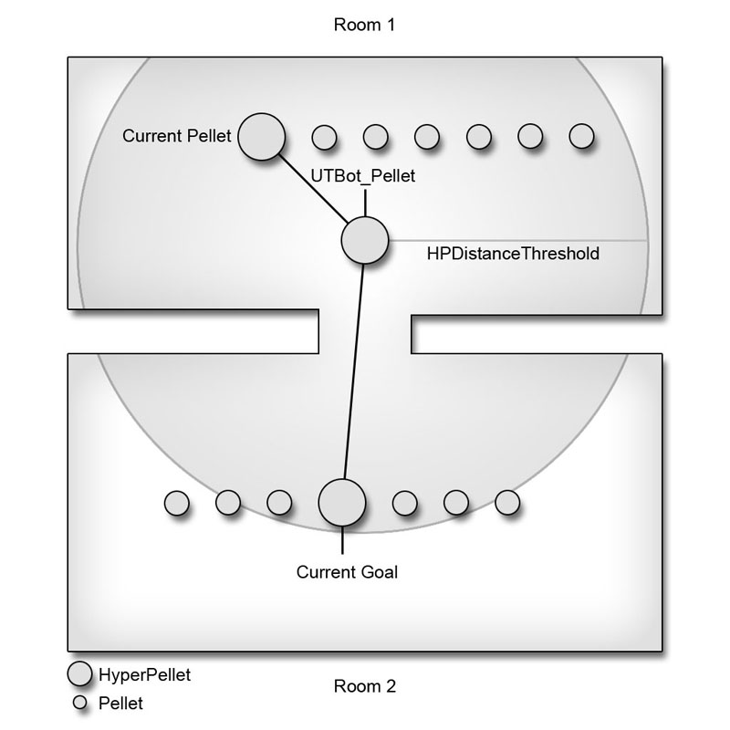
図 11.59 – 現在のペレットがより近く、現在のペレットおよびゴールは HyperPellet です。
- ゴールは存在して、現在のペレットは HyperPellet ですが、ゴールはそうではなく、現在のペレットが HPDistanceThreshold より近くなっています。

図 11.60 – 現在のペレットは HyperPellet 、ゴールは通常の Pellet であり、現在のペレットは、 HPDistanceThreshold の内にあります。
- ゴールは設定され、ゴールは HyperPellet では無く、現在のペレットはゴールより近くなっています。
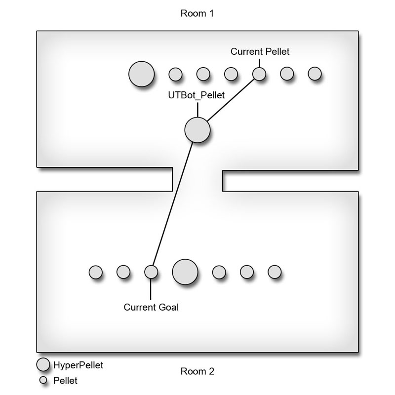
図 11.61 – 現在のペレットがより近くなっていて、現在のペレットおよびゴールは通常のペレットです。
- ゴールは設定されておらず、現在のペレットは Distance の値より近くなっています。
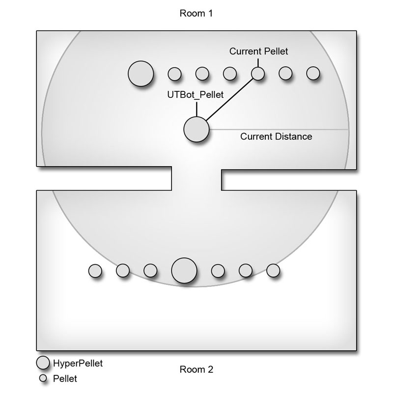
図 11.62 – 現在はゴールが存在せず、現在のペレットは現在の距離の値より近くなっています。 10. 選考する条件のいずれかに合致すれば、現在のペレットが、新しい CurrentGoal として設定され、ボットから現在のペレットまでの距離で Distance 変数は更新されます。
CurrentGoal = CurrPellet; Distance = currDistance;11. 作業結果を失わないようにスクリプトを保存してください。 <<<< チュートリアルの終了 >>>>
チュートリアル 11.24 – PELLETCOLLECTING 状態、パート II: HASREACHEDGOAL() 関数
PelletCollecting 状態に追加される 2 つめの関数は、 HasReachedGoal() 関数です。この関数は、主にボットの位置を確認して、目的地の位置を比較することで、ボットがその最終目的地に到達しているかどうかを判断します。もしそれらの間の距離がボットの衝突半径より小さければ、ボットはその目的地に到達しているとみなされ、新たな目的地の選択ができます。 1. ConTEXT および UTBot_Pellet.uc スクリプトをオープンしてください。 2. PelletCollecting 状態内に Bool 型をリターンする HasReachedGoal() 関数を宣言してください。
function Bool HasReachedGoal()
{
}
3. 本関数は、 True または False のどちらかをリターンする、一連の If-文で構成されます。ボットが代入された Pawn を持つことを、確かめるために最初の状態をチェックします。そうでなければ、この関数の実行を継続する理由が無いため、 False をリターンします。
if(Pawn==none) return false;4. 次に、他の If-文で、確かに CurrentGoal および MoveTarget が設定されていることをチェックします。 MoveTarget は、ボットが最終目的地に向かっている際の中間地点を示すのに対して、CurrentGoal は、最終目的地を示します。これらがどちらも設定されていない場合は、この関数は True をリターンすべきことを意味し、新規に目的地を設定する必要があります。
if(CurrentGoal == None || MoveTarget == none) return true;5. 最後の If-文も、もし条件が合致したら True をリターンします。この文は、 bResetMove 変数をチェックして、もし True ならば、新たな目的地を選択するために True をリターンします。さらに、ボットが最終目的地に到達したかどうかの確認が実施されます。
if( bResetMove || VSize(CurrentGoal.Location-Pawn.Location) < Pawn.CylinderComponent.CollisionRadius ) return true;注記 : この文が直前の文と分かれている理由は、単により読みやすくしておくためです。すべての条件を 1 つの If-文で記述すると手に負えないものになるかもしれません。それらをより小さい個々のチェックに分けると読みやすくなりますが、全てをグループ化するために && 演算子を使用すると、条件の 1 つが fail になったときに直ちにこの文全体が fail しますので、処理時間が節約されて、より速く実行できるかもしれません。

図 11.63 – ボットはゴールに到達するにつれて、登録するゴールの衝突半径内になければなりません。 6. 最後に、すべての If-文の後で、関数は、他のあらゆる状況に対応するものとして False をリターンします。
return false;7. 作業結果を失わないためにスクリプトを保存してください。 <<<< チュートリアルの終了 >>>>
チュートリアル 11.25 – PELLETCOLLECTING 状態コード
PelletCollecting 状態の最後の部分は状態コード自身です。このコードは、関数内に含まれていませんが、ボットが PelletCollecting 状態にあるときに実行されます。このコードは、 PelletCollecting 状態の時に、ボットが何を行うかを実際に告げるものです。 注記 : このチュートリアルおよびこの後のチュートリアルの状態コード内で使用された関数の多くは、潜在的な関数ですので、状態内から呼び出されるのみであり、任意の関数内から呼び出されないことを意味します。 1. ConTEXT および UTBot_pellet.uc スクリプトをオープンしてください。 2. 状態コードは、状態の中のすべての関数宣言の後ろに置かれラベルから開始します。ここでは、Begin となります。Begin:3. 状態が開始したときはいつでも、 HasReachedGoal() 関数を呼び出すことにより、また、 If-文内の条件としてリターン値を使用して、ボットが現在の目的地に届いたかどうかを判断するためにチェックが実行されます。関数が True をリターンした場合は、ボットに対する新たな目的地を見つけるために FindNewGoal() 関数が呼び出されます。
if(HasReachedGoal())
{
FindNewGoal();
}
4. 次に、もう 1 つの If-文で、新たな目的地が発見されたかどうかを確認します。
if(CurrentGoal != None)
{
}
5. この If-文の内部では、 2 つの可能性のある動作の内 1 つが実行されます。最初に、ボットは、 ActorReachable() 関数を使用して、現在の位置から直接 CurrentGoal に到達可能かを確認します。この関数は、関数に渡された Actor が、移動経路のネットワークを使用して、中間地点まで移動する必要無く、移動できるかを決定します。もし CurrentGoal が到達可能であれば、ボットは、 MoveToward() 関数を利用して、接近するように指示されます。
if(ActorReachable(CurrentGoal))
{
MoveToward(CurrentGoal);
}

図 11.64 – ボットは直接ゴールへ移動します。 6. もし CurrentGoal に直接到達できなければ、ボットは、最終的に最後の目的地に到達するために向かうべき中間地点を見つけるために経路ネットワークを使用する必要があります。 FindPathToward() 関数は、希望する最終目的地を渡され、最終目的地への経路上の次の中間点をリターンします。次いで、間接的に CurrentGoal に向かって移動するために、この中間点が MoveToward() 関数に渡されます。
else
{
MoveTarget = FindPathToward(CurrentGoal);
MoveToward(MoveTarget,CurrentGoal);
}
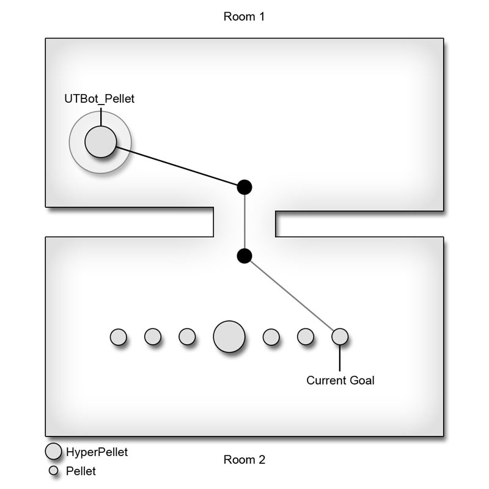
図 11.65 – ボットは、中間的な地点に向かって移動します。 7. すべての先行する状態コードの後、すべての If-文の外側で、 LatentWhatToDoNext() 関数が呼び出されます。この関数は、ボットの主要な意思決定が行われたところで ExecuteWhatToDoNext() 関数を最終的に呼び出します。 UTBot_pellet クラスに追加された他の状態と同様に、この新しい PelletCollecting 状態をボットで使用するためのコードを実装する、この後のチュートリアルで関数をオーバーライドします。
LatentWhatToDoNext();8. 作業結果を失わないように、スクリプトを保存してください。 <<<< チュートリアルの終了 >>>>
チュートリアル 11.26 – PELLETHUNTING 状態、パート I: FINDNEWGOAL() 関数
PelletCollecting 状態の間は、ボットは、収集されていないペレットを探します。最初に全てのペレットが集められたら、ボットは、追いかけて殺しポイントを奪うため、現在、最も高いポイントのプレーヤーを探す PelletHunting 状態を使用します。この状態は、 PelletCollecting 状態を拡張しているため、その両方の中に含まれる関数をオーバーライドします。 1. ConTEXT および UTBot_Pellet.uc スクリプトをオープンしてください。 2. PelletCollecting 状態の後で、 PelletCollecting 状態から拡張された新規の PelletHunting 状態を宣言してください。
state PelletHunting extends PelletCollecting
{
}
3. FindNewGoal() 関数は、最初に PelletCollecting 状態から継承されたバージョンをオーバーライドしてから宣言されます。
function FindNewGoal()
{
}
4. FindNewGoal() 関数の基本的な考え方は維持されています ; ボットが目指す最も好ましい目的地を指定します。このインスタンスでは、最も好ましい目的地は、ボット自身以外で、最もポイントを持っているプレーヤーです。この関数は、それらのスコアを比較しながらレベル内の全てのコントローラについて繰り返されます。これには、 2 つのローカル変数が必要です ; 1 つは、現在のコントローラを保持するため、もう 1 つは、最高スコアを保持するためです。
local Controller CurrController; local Int CurrScore;5. 最初に、コントローラの Pawn が有効な参照を持っているかどうかが確認されます。もし持っていなければ、この関数の実行を継続する必要はありません。
if(Pawn==none) return;6. 次に CurrentGoal および CurrScore が初期化されます。すべての他のプレーヤーにポイントが無かったとしても、目的地が選択されることを確実にするために CurrScore 変数を -1 にセットすると共に、現在、アクタに対する何らかの参照を持っている CurrentGoal 変数は削除されます。
CurrScore = -1; CurrentGoal = None;7. ここで、レベル内の個々のコントローラで繰り返すために、 AllControllers イテレータが使用されます。基底の Controller クラスが使われるため、プレーヤーおよびボットの双方が含まれ、現在のコントローラは CurrControllerローカル変数によって保持されます。
foreach WorldInfo.AllControllers(class'Engine.Controller',CurrController)
{
}
8. 現在のコントローラが問題となっているボットでは無いことを確認するため、イテレータの内部で、現在のコントローラは、 Self キーワードを使用してボットと比較されます。また、現在のコントローラのスコアは、コントローラのポイントがより高いかどうかを確認するために CurrScore と比較されます。これら条件が両方とも合致したら、現在のコントローラの Pawn は、 CurrentGoal として設定され、そのスコアが CurrScore として設定されます。
if(CurrController != self && CurrController.PlayerReplicationInfo.Score > CurrScore)
{
CurrScore = CurrController.PlayerReplicationInfo.Score;
CurrentGoal = CurrController.Pawn;
}
9. 作業結果を失わないようにスクリプトを保存してください。
<<<< チュートリアルの終了 >>>>
チュートリアル 11.27 – PELLETHUNTING 状態、パート II: HASREACHEDGOAL() 関数
現在、ボットはプレーヤーを追跡しているため、目的地への経路の定義は少しずつ変更されています。 PelletHunting 状態においては、ボットは目的地に到達するとみなされる前に、目的地から特定の距離の中に存在する必要があるだけです。通常、敵に対して直接近づくのは、最上の戦略ではありません。そのため、ボットが許容された半径内に存在するならば、既存の戦闘機能を使用して、プレーヤーの追跡、および、戦闘の開始を指示されます。 1. ConTEXT および UTBot_Pellet.uc スクリプトをオープンしてください。 2. PelletHunting 状態内の FindNewGoal() 関数の後ろに、この状態ととてもよく似ている PelletCollection 状態から HasReachedGoal() 関数をコピー & ペーストしてください。
function Bool HasReachedGoal()
{
if(Pawn==none)
return false;
if(CurrentGoal == None || MoveTarget == none)
return true;
if( bResetMove ||
VSize(CurrentGoal.Location-Pawn.Location) < Pawn.CylinderComponent.CollisionRadius )
return true;
return false;
}
3. 始めの 2 つの If-文はそのままですが、 3 つめを変更しなければなりません。それは、 CurrentGoal からボットまでの距離を計算して、ボットが目的地に進まなければならない最小の距離、ここでは 1024 ユニットで示される距離を設定するために結果を比較する If-文によって置き換えられます。
if(VSize(CurrentGoal.Location-Pawn.Location) < 1024)
{
}
4. If-文の内部では、 CurrentGoal は、この時点でボットの Enemy として設定されます。
Enemy = Pawn(CurrentGoal);Enemy は、 Pawn でなければならないので、ここではキャストが必要です。PelletHunting 状態においては、 CurrentGoal が Pawn であることが保証されているので、このように動作するだけです。

図 11.66 – 目的地は、ボットの 1024 ユニット内では、敵となります。 5. 他の If-文は、ボットの周辺視野内で見ることができるように Pawn が渡された場合に True をリターンする CanSee() 関数のリターン値を使用します。
if(CanSee(Pawn(CurrentGoal)))
{
}
6. 条件が合致したら、ボットが Enemy に攻撃可能であることを示す True 値と、 RelativeStrength() 関数からリターンされた Enemy の強さを渡して FightEnemy() 関数が呼び出されます。この関数は、Enemy とどのように戦うかを決めるために UTBot クラスの既存の機能を使用します。
FightEnemy(true,RelativeStrength(Enemy));
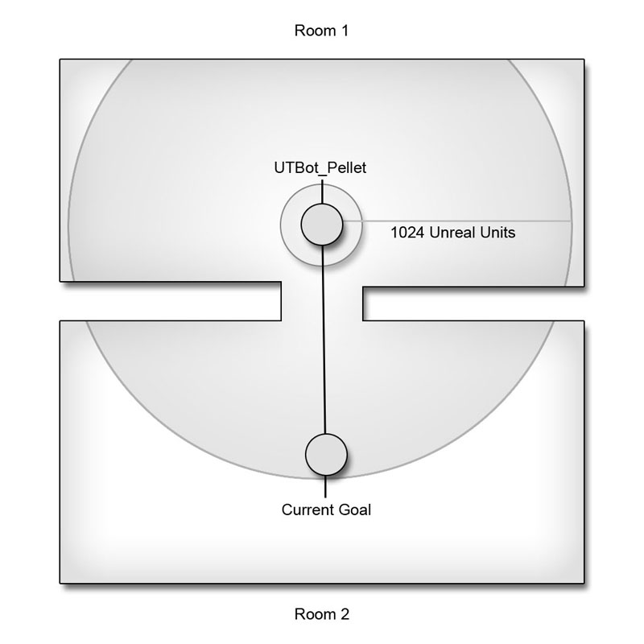
図 11.67 – 敵に対して照準線を持つ時、ボットは攻撃します。 7. 作業結果を失わないように、スクリプトを保存してください。 <<<< チュートリアルの終了 >>>>
チュートリアル 11.28 – EXECUTEWHATTODONEXT() および WANDERORCAMP() 関数をオーバーライドします
UTBot_Pellet クラス内に状態がありますが、現在は、これらの 2 つの状態のいずれにもボットを配置するための機能は存在しません、しかし auto キーワードを使って PelletCollecting 状態に初期配置されます。単に状態内に 1 度だけ配置することで、状態コードを 1 度実行し、ボットの機能を停止します。状態コード内の LatentWhatToDoNext() 関数の呼び出しは、適切な時に ExecuteWhatToDoNext() 関数を強制することによって、この処理への責任を負います。関数をオーバーライドして、基本的に、ボットはペレットを集めるか、リーダーを追跡するか、既存の UTBot 動作を使用するかのいずれかを選択します。 1. ConTEXT および UTBot_Pellet.uc スクリプトをオープンしてください。 2. 任意の状態の外側で、 ExecuteWhatToDoNext() イベントを宣言してください。以下の内容を持つはずです :
protected event ExecuteWhatToDoNext()
{
}
3. この関数の、このクラスのバージョンは、 UTBot 動作を使用する代わりに、ボットがペレットを集めるかリーダーを追跡する可能性の百分率を計算するために、ボットに属するいくつかのプロパティの加重平均を使用します。この加重平均は、 4 つの独立した部分で成っています。
4 * FClamp(Skill/6.0, 0.0, 1.0)ボットの Skill は、正規化され、また、 0.0 から 1.0 の範囲にクランプされ、 4 の重みが与えられます。
2 * Aggressiveness直前の Skill で重み付けされた値が、2 の加重で、ボットの Aggressiveness に加算されます。
2 * (1 - ((CombatStyle + 1.0) / 2))シフトされ 0.0 から 1.0 の間に正規化された後、ボットの CombatStyle の逆比例値に、 2 の加重が与えられて、直前の結果に加算されます。
2 * (1 - Jumpiness)次に、ボットの Jumpiness プロパティの逆比例値が 2 の加重で与えられ、直前の結果に追加されます。
( 4 * FClamp(Skill/6.0, 0.0, 1.0) + 2 * Aggressiveness + 2 * (1 - ((CombatStyle + 1.0) / 2)) + 2 * (1 - Jumpiness) ) / 10最後に全ての計算、すなわち、平均を算出するためのすべての加重の合計を 10 で除算します。これらの値は、単に試行錯誤の結果であり、使用されたプロパティは Skill 以外は、個人的な好みです。スキルの使用に最も多くの加重をかけているのは、前章で作成されたゲームタイプによって、その値がゲームの進行につれて難易度を増すために直接修正されるためです。このプロパティを使用して、同様にゲームが進むにつれ、ボットが、より攻撃的にペレットを集めたり、リーダーを追跡したりすることを確実にします。 4. 前ステップからの加重平均は、 If-文の条件の中で、 0.0 から 1.0 の範囲のランダムな値と比較されます。加重平均が、ランダムな値より大きければ、ボットは UTBot_Pellet クラスに追加された状態の 1 つに在ります。そうでなければ、 ExecuteWhatToDoNext() の UTBot バージョンへの呼出しが、標準のボットの動作を利用するために行われます。
if(RandRange(0.0,1.0) < ( 4 * FClamp(Skill/6.0, 0.0, 1.0) +
2 * Aggressiveness +
2 * (1 - ((CombatStyle + 1.0) / 2)) +
2 * (1 - Jumpiness) ) / 10)
{
}
else
Super.ExecuteWhatToDoNext();
5. If-文の内部では、収集すべきペレットがそのレベルに残っているかを判断するために、もう 1 つの If-文が使用されます。
if(UTPelletGame(WorldInfo.Game).PelletInfo.Pellets.Length > 0)
{
}
else
{
}
6. 始めに If ブロックの中で、この場合は、収集するべきペレットが残っている時で、ボットは PelletCollecting 状態です。それに先立って、ボットが未だ PelletCollecting 状態でない場合、ボットの CurrentGoal はクリアされます。これにより、ボットは他の状態のレベルをまたがって移動することができ、現在の位置からかけ離れた直前の目的地に向かって移動し始めるので、新たな状態が入力された時に適切な目的地が選択されます。
if(!IsInState('PelletCollecting'))
CurrentGoal = None;
GotoState('PelletCollecting','Begin');
IsInState() 関数は、ボットが現在 PelletCollecting 状態にあるかどうかを指定する Bool 値をリターンします。GotoState() 関数は、ボットを指定した PelletCollecting 状態に置きます。オプションのラベル Begin が関数に渡され、その状態の状態コードを、ラベルから実行開始するようにボットに命令します。
7. 続いて Else ブロックの中ですが、収集するペレットがもう無いため、ボットは、 PelletHunting 状態になります。直前のステップのように、ボットが既に PelletHunting 状態の場合は、 CurrentGoal はクリアされます。
if(!IsInState('PelletHunting'))
CurrentGoal = None;
GotoState('PelletHunting','Begin');
8. UTBot クラスの WanderOrCamp() ファンクションは、クラスの処理を通じて何度か呼び出され、ボットを単に Defending 状態にします。 UTPelletGame での防御に、特別な点はありませんし、この状態を使用することは特に便利ではありません。この関数は、ボットをクラス内で定義された新たな状態の 1 つにするため、 UTBot_Pellet クラス内でオーバーライドされます。オーバーライドを行うために WanderOrCamp() 関数を宣言してください。
function WanderOrCamp()
{
}
9. ここで、内部の If-文を、収集するペレットの余り量に依存して、適切な状態にボットを置くため ExecuteWhatToDoNext() 関数からコピーしてください。
if(UTPelletGame(WorldInfo.Game).PelletInfo.Pellets.Length > 0)
{
if(!IsInState('PelletCollecting'))
CurrentGoal = None;
GotoState('PelletCollecting','Begin');
}
else
{
if(!IsInState('PelletHunting'))
CurrentGoal = None;
GotoState('PelletHunting','Begin');
}
10. 作業結果を失わないようにスクリプトを保存してください。
<<<< チュートリアルの終了 >>>>
チュートリアル 11.29 – PELLET クラスのボットの設定
ボットの行動で良く起こるものとして、ボットがペレットに向かって移動している時に、そこに到達する前に他のプレーヤーがペレットを収集してしまうという問題があります。この状況に対処するために、いくつかの追加の機能を Pellet、 HyperPellet および SuperPellet クラスに追加しなければなりません。 1. ConTEXT および Pellet.uc, HyperPellet.uc および SuperPellet.uc スクリプトをオープンしてください。 2. Touch() イベントでは、現在このペレットに向かって移動している任意のボットは、そのボットに新たな目的地を選択させるために bResetMove 変数を True に設定する必要があります。これは、レベル内の UTBot_Pellet コントローラを対象に繰り返すことによって実行されますので、 AI と名付けられた UTBot_Pellet ローカル変数が必要です。local UTBot_Pellet AI;3. If-文の内部に、 UTBot_Pellet クラスおよび AI ローカル変数を渡して AllControllers イテレータ関数を使用するイテレータを設定してください。
foreach WorldInfo.AllCOntrollers(class'MasteringUnrealScript.UTBot_Pellet',AI)
{
}
4. イテレータの内部では、現在のボットの CurrentGoal は、 If-文を使用してペレットに対してチェックされます。ペレットおよびボットの CurrentGoal が同一であれば、ボットの bResetMove プロパティは True に設定されます。
if(AI.CurrentGoal == self) AI.bResetMove = true;5. ここで、新たなローカル変数宣言を HyperPellet および SuperPellet クラスの Touch() イベント内にコピーしてください。 6. 最後に、 2 つの追加ペレットクラスの中にイテレータをコピーしてください。 7. 作業結果を失わないように、スクリプトを保存してください。 <<<< チュートリアルの終了 >>>>
チュートリアル 11.30 – ペレットボットのコンパイルおよびテストの実施
UTPelletGame ゲームタイプに対するカスタムボットの作成が完了したら、 UTPelletGame クラスは、新規ボットクラスを設定することを指定される必要があります。それが完了した時に、スクリプトはコンパイルされ、ゲームタイプはボットが予期した通りに動作することを確かめるためにテストできます。 1. ConTEXT および UTPelletGame.uc スクリプトをオープンしてください。 2. defaultproperties ブロック内で、新規ボットクラス UTBot_Pellet を参照するために BotClass プロパティを設定してください。BotClass=Class'MasteringUnrealScript.UTBot_Pellet'3. スクリプトを保存して、スクリプトをコンパイルして文法エラーが在ったら修正してください。 4. Unreal Tournament 3 をロードして、 Instant Action ゲームを選択してください。

図 11.68 – Instant Action ゲームが開始されます。 5. 次の画面からSelect UTPelletGame を選択し、その後で CH_10_PowerDome マップを選択してください。

図 11.69 – CH_10_PowerDome マップが選択されます。 6. マップ上に配置したい数だけボットを置くために、ボットの数を選択してください。 5 から 7 が通常このマップにはふさわしい数です。それから、ゲームの開始を選択してください。

図 11.70 – ボットはテスト用にマップに追加されなければなりません。 7. この時点では、ゲームとボットの動作のテストをする責任は操作者にあります。コンソールで 'god' と入力して God モードを有効にすることは、新しいボットの動作を観察している間に殺されなくなるので、通常は良い考えです。いつでもそれぞれのボットが何ポイントを持っているかを見るため、スコアボードを表示するために F1 を押すことができます。これは、通常期待するようにペレットの収集を行っているかを確認するには良い方法です。
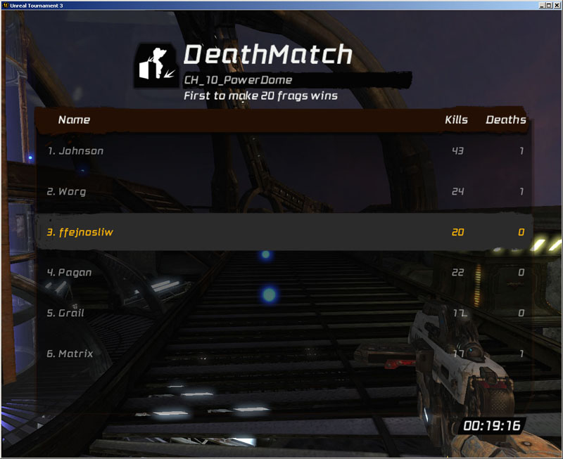
図 11.71 – ゲーム内のスコアボードは、ゲーム中にそれぞれのプレーヤーによるペレット収集の数を表示します。 検索している主なものは、収集されたペレット、および、最も数多くのペレットを持つボットを探して攻撃する少ないペレットのボットです。残りのペレットがすべて収集された時に、強制的に残りのボットがすべて追いかけてくるため、半分以上のペレットを自分自身で集めることは、これをテストする良い方法です。
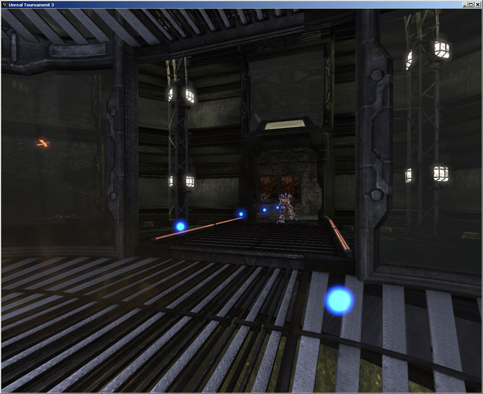
図 11.72 – ボットはペレットを収集中です。 これらのチュートリアルでは、異なる動作に対する状態の利用を示すだけでなく、できれば、コントローラクラスに組み込まれた関数を使用した、新たな AI およびナビゲーション機能を実装する方法についての見識が得られたかと思われます。 <<<< チュートリアルの終了 >>>>
11.8 - サマリ
Statesは、 Unreal Engine 3 において、複雑な制御構造の必要性を最小にしつつ、多くの状況で厳密に異なる動作を行うため、そのゲーム内のオブジェクトを利用できるようにする信じられないくらい強力なツールです。そうは言っても、これはゲーム環境で使用するオブジェクトの生成について、個別に UnrealScript のプログラム言語を調整したケースの 1 つに過ぎません。状態によって提供された構成および、コードの可読性によって、ゲームプレイプログラマが利用可能な、信じられないほど複雑な動作を行う新規アイテムが、より簡単に作成されます。- TurretContent.upk: TurretContent?.upk